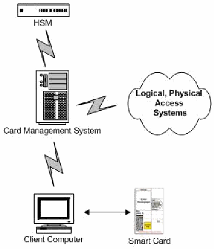
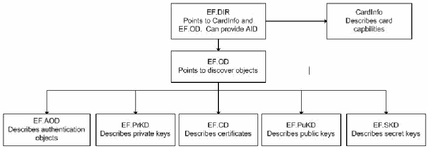
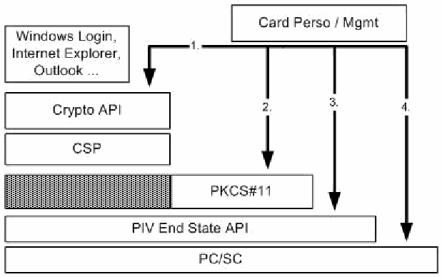

NIST IR 7284 日本語訳
英語タイトル : Personal Identity Verification Card Management Report日本語タイトル : 個人識別検証カード管理報告書
公開日 : 2006-01-06
原文URL : https://csrc.nist.gov/pubs/ir/7284/final
原本 PDF : https://doi.org/10.6028/NIST.IR.7284
訳文 : 有志による非公式の日本語訳（AI による翻訳とレビュー）。全 311 段落のうち 296 段落を翻訳済み（原文取得日 : 2026-10-31）
[要約] NIST IR 7284 は、個人識別検証（PIV）カードの管理について、カード管理システムの概要を示し、汎用的なカード管理要件を明らかにした報告書です。NIST SP 800-73 は PIVカードの技術仕様を示していますが、PIV システムのための完全なカード管理仕様は含まれていないとされ、本書はこの欠落部分を補うためのいくつかの技術的アプローチを検討しています。検討対象とする技術的アプローチを選ぶ際の主な指針は、既存の PIV 仕様の変更を必要とせず、適用される正式な標準に適合することです。カードのパーソナライゼーションと管理のライフサイクル、カード管理操作、SP 800-73 に対する選定した拡張候補を述べ、PIV コマンドセットを拡張して管理とパーソナライゼーションを含めると、カード発行プロセスの一貫性とテスト可能性が高まるとしています。
［NIST のロゴ。公的な標章のため、この非公式サイトには掲載していません。原本 PDF を参照してください。］
NISTIR 7284
NISTIR 7284
Personal Identity Verification Card Management Report
個人識別検証カード管理報告書
Jim Dray
Jim Dray
David Corcoran
David Corcoran
NISTIR 7284
NISTIR 7284
Personal Identity Verification Card Management Report
個人識別検証カード管理報告書
Jim Dray David Corcoran
Jim Dray David Corcoran
COMPUTER SECURITY
コンピューターセキュリティ
Information Technology Laboratory National Institute of Standards and Technology Gaithersburg, MD, 20899-8940
情報技術研究所 国立標準技術研究所 Gaithersburg, MD, 20899-8940
January 2006
2006年1月
［米国商務省の紋章。公的な標章のため、この非公式サイトには掲載していません。原本 PDF を参照してください。］
［米国商務省の紋章。公的な標章のため、この非公式サイトには掲載していません。原本 PDF を参照してください。］
U.S. Department of Commerce Carlos M. Gutierrez, Secretary
米国商務省 Carlos M. Gutierrez 長官
Technology Administration Michelle O’Neill, Under Secretary for Technology
技術管理局 Michelle O’Neill、技術担当次官
National Institute of Standards and Technology William A. Jeffrey, Director
国立標準技術研究所 William A. Jeffrey 所長
REPORTS ON COMPUTER SYSTEMS TECHNOLOGY
コンピューターシステム技術に関する報告書
The Information Technology Laboratory (ITL) at the National Institute of Standards and Technology (NIST) promotes the U.S. economy and public welfare by providing technical leadership for the Nation’s measurement and standards infrastructure. ITL develops tests, test methods, reference data, proof of concept implementations, and technical analyses to advance the development and productive use of information technology. ITL’s responsibilities include the development of management, administrative, technical, and physical standards and guidelines for the cost-effective security and privacy of non-national security-related information in federal information systems. This Interagency Report discusses ITL’s research, guidelines, and outreach efforts in information system security, and its collaborative activities with industry, government, and academic organizations.
国立標準技術研究所（NIST）の情報技術研究所（ITL）は、国の計測・標準基盤に対して技術的なリーダーシップを提供することにより、米国経済と公共の福祉を促進しています。ITL は、情報技術の発展と生産的な利用を進めるため、試験、試験方法、参照データ、概念実証実装および技術分析を開発しています。ITL の責務には、連邦情報システムにおける国家安全保障に関係しない情報のセキュリティとプライバシーを費用対効果よく確保するための、管理上、行政上、技術上および物理上の標準とガイドラインの策定が含まれます。この省庁間報告書は、情報システムセキュリティにおける ITL の研究、ガイドライン、アウトリーチ活動と、産業界、政府、学術機関との共同活動について論じています。
National Institute of Standards and Technology Interagency Report, 35 pages (January 2006)
国立標準技術研究所 省庁間報告書、35ページ（2006年1月）
Certain commercial entities, equipment, or materials may be identified in this document in order to describe an experimental procedure or concept adequately. Such identification is not intended to imply recommendation or endorsement by the National Institute of Standards and Technology, nor is it intended to imply that the entities, materials, or equipment are necessarily the best available for the purpose.
本書では、実験の手順や概念を適切に説明するために、特定の商業的な事業体、機器または資材を明示している場合があります。このような明示は、国立標準技術研究所による推奨や推薦を意味するものではなく、また、それらの事業体、資材または機器が目的に照らして必ずしも最良のものであることを意味するものでもありません。
Acknowledgements
謝辞
The authors, Jim Dray of the National Institute of Standards and Technology (NIST) and David Corcoran of Identity Alliance, wish to thank their colleagues who reviewed drafts of this document and contributed to its development. The authors also gratefully acknowledge and appreciate the many contributions from the public and private sectors for the continued interest and involvement in the development of this publication.
著者である国立標準技術研究所（NIST）の Jim Dray と Identity Alliance の David Corcoran は、本書の草稿をレビューし、作成に貢献してくれた同僚に感謝します。また、著者は、本書の作成に継続して関心を寄せ、関与してくださった官民両部門の多くの貢献に、深く感謝いたします。
Abstract
要旨
NIST Special Publication 800-73 (http://piv.nist.gov) provides technical specifications for Personal Identity Verification (PIV) cards. However, it does not contain a complete card management specification for PIV systems. This report provides an overview of card management systems, identifies generic card management requirements, and considers some technical approaches to filling the existing gaps in PIV card management. The primary guiding principles in selecting technical approaches for consideration are that they should require no changes to the existing PIV specifications and should conform to applicable formal standards. Expanding the PIV command set to include management and personalization would result in a higher level of consistency and testability for PIV card issuance processes, enhanced ability to outsource various card management components and functions, and improved overall security for the federal PIV framework.
NIST 特別刊行物 800-73（http://piv.nist.gov）は、個人識別検証（PIV）カードの技術仕様を示しています。しかし、PIV システムのための完全なカード管理仕様は含まれていません。本報告書は、カード管理システムの概要を示し、汎用的なカード管理要件を明らかにし、PIVカード管理における既存の欠落部分を補うためのいくつかの技術的アプローチを検討します。検討対象とする技術的アプローチを選ぶ際の主な指針は、既存の PIV 仕様の変更を必要とせず、適用される正式な標準に適合することです。PIV コマンドセットを拡張して管理とパーソナライゼーションを含めると、PIVカード発行プロセスの一貫性とテスト可能性が高まり、さまざまなカード管理の構成要素や機能を外部委託する能力が向上し、連邦 PIV フレームワーク全体のセキュリティが改善されることになります。
Table of Contents
目次
List of Figures
図の一覧
List of Tables
表の一覧
1. Introduction
1. はじめに
The Homeland Security Presidential Directive (HSPD-12) has been used as a catalyst for the development of standards governing the interoperable usage of identity credentials for physical and logical access purposes across all agencies of the Federal Government. The resulting suite of National Institute of Standards and Technology (NIST) specifications defines a collection of processes through which a federal employee or contractor is first identified and then issued a smart card based credential, which can be used in an interoperable manner across federal agencies. These smart cards are referred to as Personal Identity Verification (PIV) cards.
国土安全保障に関する大統領指令（HSPD-12）は、連邦政府の全機関にわたり、物理アクセスと論理アクセスのための本人確認用資格情報を相互運用可能な形で利用することを定める標準を策定する契機として用いられてきました。その結果として得られた国立標準技術研究所（NIST）の一連の仕様は、連邦職員または契約業者をまず識別し、その後、連邦機関間で相互運用可能な形で使用できるスマートカードベースの資格情報を発行するための、プロセスの集合を定義しています。これらのスマートカードは、個人識別検証（PIV）カードと呼ばれます。
The scope of the PIV specifications was defined by a set of use cases developed among the federal agencies during the inception of NIST’s response to HSPD-12. Use cases specifically address only credential usage and consider the personalization and management of smart card based credentials out of scope. This report examines card management requirements, presents these requirements in the context of PIV systems, and reviews technical approaches to meeting these requirements. The motivation for this work is to support and enhance interoperability of PIV cards. Key high-level concepts are presented in italics.
PIV 仕様の範囲は、NIST が HSPD-12 に対応し始めた時期に、連邦機関の間で作成されたユースケースの集合によって定められました。ユースケースは、資格情報の使用のみを対象としており、スマートカードベースの資格情報のパーソナライゼーションと管理は対象外としています。本報告書は、カード管理要件を検討し、それらの要件を PIV システムの文脈で示し、要件を満たすための技術的アプローチを概観します。この作業の動機は、PIVカードの相互運用性を支援し、高めることです。主要な上位概念は斜体で示しています。
2. Overview of Card Management Elements
2. カード管理要素の概要
Card management is the term applied to the preparation of a smart card token before its issuance to the cardholder and the provision of administrative functions for the card during its lifetime of use in the possession of the cardholder. Card management is particularly important because it so basically affects the security characteristics of the card, and security is the raison d'etre of smart cards. In this section, the basic elements of card management will be considered.
カード管理とは、スマートカードトークンをカード保持者に発行する前に準備し、カード保持者が所持して使用する期間中にカードの管理機能を提供することを指します。カード管理が特に重要なのは、カードのセキュリティ特性に根本的な影響を及ぼすためであり、セキュリティこそがスマートカードの存在理由です。本節では、カード管理の基本要素を検討します。
2.1 Card Personalization/Management Lifecycle
2.1 カードのパーソナライゼーション／管理ライフサイクル
The phases through which a card passes—from initial development and manufacturing, to issuance to the end cardholder, to final retirement of the card—are often referred to as the card’s lifecycle. Card management is a general term used to describe the system through which a card is managed—that is, through which various pieces of information on the card are initialized, monitored, and/or updated while the card is in routine use. Personalization is the process through which the card is bound or personalized to its owner (i.e., cardholder) before the card being issued—that is, placed in the physical possession and control of the cardholder. Card management systems (CMS) usually provide mechanisms by which a smart card is personalized. A distinguishing example is the personal identification number (PIN) unblock feature that is available in many CMSs. PIN unblock typically consists of a process through which a blocked card is unblocked and then updated with a new PIN provided by the user.
カードがたどる段階、すなわち初期の開発・製造から、最終的なカード保持者への発行、カードの最終的な利用終了までの段階は、カードのライフサイクルと呼ばれることがよくあります。カード管理とは、カードを管理するシステム、つまり、カードが通常使用されている間にカード上のさまざまな情報を初期化、監視、および／または更新するシステムを表す一般的な用語です。パーソナライゼーションとは、カードを発行する前、すなわちカードをカード保持者が物理的に所持し管理する状態に置く前に、カードをその所有者（すなわちカード保持者）に結び付ける、つまりパーソナライズするプロセスです。カード管理システム（CMS）は通常、スマートカードをパーソナライズする仕組みを提供します。特徴的な例として、多くの CMS で利用できる個人識別番号（PIN）のブロック解除機能があります。PIN のブロック解除は通常、ブロックされたカードのブロックを解除し、ユーザーが提示した新しい PIN でカードを更新するプロセスから成ります。
Smart cards must be managed during the various stages of their lifecycle. This section describes the various stages of the card’s lifecycle and what types of operations occur at these particular stages. Figure 2-1 illustrates the three stages of card management that occur during the lifecycle of a smart card; some systems define more stages but most include at least these three.
スマートカードは、ライフサイクルのさまざまな段階で管理しなければなりません。本節では、カードのライフサイクルのさまざまな段階と、それぞれの段階でどのような種類の操作が行われるかを説明します。図 2-1 は、スマートカードのライフサイクル中に発生するカード管理の 3 つの段階を示しています。より多くの段階を定義しているシステムもありますが、ほとんどは少なくともこの 3 つを含みます。
![Three boxes connected left to right by arrows. "Pre-Personalization: Usually done at factory. Setting of Admin Keys, Loading of Applications, Setting base file/object structure, Setting base security parameters ..." → "Personalization: Usually done at issuance. Loading user data, certificates. Import and generation of keys. Setting of user pin/biometric. Possible load of applets" → "Post Issuance Update: Done after issuance. Loading/replacing applications, replacement/addition of keys/ certificates. Update user data. Unblocking/Changing/Resetting PIN/Biometric".](assets/ir-7284/p0009-figure-01.png)
Figure 2-1: Smart Card Management Stages
図 2-1: スマートカード管理の段階
•Pre-personalization. The first stage occurs at the factory. This stage is agreed on by the card producer and the customer and usually consists of setting up some core applications and generic data models to prepare the card for issuance by the customer through his or her CMS. Soft masks (firmware) may be applied during this phase, as well as loading card applications for multi-application cards. By preloading card applications, typically an issuer can trim several minutes off the issuance process. Administrative keys are set as agreed by the two parties through a previous key generation and exchange ceremony. The card may then be preloaded with a skeleton file/object structure and generic data. The end result of the pre-personalization process is to create a “common” card that is used as the starting point for the personalization process, in which every card is made slightly different from all other cards by including “personalization” information that ties a specific card to a specific cardholder.
•事前パーソナライゼーション。最初の段階は工場で行われます。この段階はカード製造者と顧客が合意するもので、通常、顧客が自らの CMS を通じてカードを発行できるように、コアとなるいくつかのアプリケーションと汎用的なデータモデルを設定して、カードを準備することから成ります。この段階では、ソフトマスク（ファームウェア）を適用する場合があり、マルチアプリケーションカードの場合はカードアプリケーションのロードも行います。カードアプリケーションを事前にロードしておくことで、通常、発行者は発行プロセスから数分を短縮できます。管理用の鍵は、事前の鍵生成と鍵交換の儀式を通じて、両当事者が合意したとおりに設定されます。その後、カードには、骨組みだけのファイル／オブジェクト構造と汎用データを事前にロードしてもかまいません。事前パーソナライゼーションプロセスの最終的な成果は、パーソナライゼーションプロセスの出発点として使われる「共通」カードを作ることです。パーソナライゼーションプロセスでは、特定のカードと特定のカード保持者を結び付ける「パーソナライゼーション」情報を含めることで、すべてのカードが他のカードとわずかに異なるものになります。
•Personalization. This stage often occurs when the card is on customer premises and usually takes place right before or during the issuance process. Personalization will require more cardholder-specific information than pre-personalization. Certificate/key generation and loading occurs. The user’s PIN and/or biometrics are captured and loaded onto the card. Demographic data about the user may also be loaded.
•パーソナライゼーション。この段階は、カードが顧客の施設にあるときに行われることが多く、通常は発行プロセスの直前または発行中に行われます。パーソナライゼーションでは、事前パーソナライゼーションよりも多くのカード保持者固有の情報が必要になります。証明書や鍵の生成とロードが行われます。ユーザーの PIN や生体情報（またはそのいずれか）が取得され、カードにロードされます。ユーザーに関する属性データもロードされる場合があります。
•Post-Issuance. Post-issuance updates occur after the card has been issued and may involve updating any information on the card, including card applications, PINs, biometrics, demographic data, certificates, and keys. A good CMS will have a seamless way for updating the card once it has been issued. This is key to preventing the costly reissuance of cards as standards and data models change on the card.
•発行後。発行後の更新は、カードが発行された後に行われ、カードアプリケーション、PIN、生体情報、属性データ、証明書、鍵など、カード上のあらゆる情報の更新を伴う場合があります。優れた CMS は、カードの発行後にカードを更新するためのシームレスな方法を備えています。これは、標準やカード上のデータモデルが変化したときに、費用のかかるカードの再発行を防ぐための要点です。
The following operations are included in the management and personalization process:
管理とパーソナライゼーションのプロセスには、次の操作が含まれます。
•Loading and updating card data objects
•カードのデータオブジェクトのロードと更新
•Key generation
•鍵生成
•Key import
•鍵インポート
•Loading card applications
•カードアプリケーションのロード
•Unblocking PINs
•PIN のブロック解除
•Changing PINs.
•PIN の変更。
The smart card is the ultimate protector of its data and communication paths. On many multi-application smart cards, this is equally true of the card application(s). Publishing a complete card command set specification should not be considered a security vulnerability because the card or card application will protect its data when implemented properly. The base concept is that security is grounded in proper implementation of well defined protection mechanisms, and knowledge of the mechanisms actually used should not provide would-be attackers with any significant advantage. Knowing how to perform a management or personalization command sequence with a card does not equate to having the privilege to do so.
スマートカードは、そのデータと通信経路の最終的な保護者です。多くのマルチアプリケーションスマートカードでは、これはカードアプリケーションについても同様です。完全なカードコマンドセット仕様を公開しても、カードまたはカードアプリケーションが正しく実装されていればデータを保護するため、セキュリティ上の脆弱性とみなすべきではありません。基本的な考え方は、セキュリティは明確に定義された保護機構を適切に実装することに根ざしており、実際に使われている機構を知っていても、攻撃を試みる者に大きな優位性を与えないということです。カードに対する管理またはパーソナライゼーションのコマンドシーケンスの実行方法を知っていることは、それを実行する権限を持っていることと同じではありません。
When considering ubiquitous mass issuance of smart card based identity tokens, components must be amenable to procurement from multiple vendor sources, each of which meet strict interoperability guidelines so that components can be mixed and replaced over time. Although historically it was difficult to imagine a smart card system in which the CMS, card applications, and post-issuance management system were produced by different vendors, this is the goal of many current smart card deployments. Single vendor systems should not be required to achieve large-scale, working deployment. The identity token (card) might be used in environments far removed from where the card originated, so it must adequately protect itself and make certain capabilities available to different systems. This is an issue when, for example, a government employee roams across the security infrastructures of different agencies. The ability to use PIV credentials across agency boundaries is a primary HSPD-12 requirement.
スマートカードベースの本人確認トークンを広く大量に発行することを考えるとき、構成要素は、複数のベンダーから調達できるものでなければならず、各ベンダーの製品が、構成要素を混在させたり時間とともに置き換えたりできるように、厳格な相互運用性ガイドラインを満たしていなければなりません。従来は、CMS、カードアプリケーション、発行後管理システムが異なるベンダーによって作られるスマートカードシステムを想像することは困難でしたが、これは現在の多くのスマートカード導入の目標です。大規模で実際に稼働する導入を実現するために、単一ベンダーのシステムを必須とすべきではありません。本人確認トークン（カード）は、カードの発行元から遠く離れた環境で使われる場合があるため、カードは自らを十分に保護し、さまざまなシステムに対して特定の機能を利用可能にしなければなりません。たとえば、政府職員が異なる機関のセキュリティ基盤をまたいで移動する場合に、これが問題となります。PIV 資格情報を機関の境界を越えて使用できることは、HSPD-12 の主要な要件です。
A smart card’s card interface specification (i.e., the command set it provides) and its data model must be known to the CMS, the card operating system or application, and the middleware component(s) that enable card usage with host systems. If the card is used for physical access purposes, this card interface may also need to be known to the physical access system. Specifically, for card management and personalization, the CMS and card operating system or application must share knowledge of the card interface specifications responsible for personalization and management. Without complete specifications, the CMS and card operating system (or application) are tightly bound, requiring implementation by a single vendor. If a CMS vendor wishes to support multiple card operating systems or card applications, the vendor must have specific code for each in order to perform management and personalization functions. By fully specifying card management interfaces, this tight integration requirement can be avoided and the potential for a CMS to work with new cards and their applications would be primarily a matter of testing and validation.
スマートカードのカードインターフェース仕様（すなわち、カードが提供するコマンドセット）とそのデータモデルは、CMS、カードのオペレーティングシステムまたはアプリケーション、およびホストシステムでのカードの使用を可能にするミドルウェアコンポーネントに知られていなければなりません。カードを物理アクセスの目的に使用する場合は、このカードインターフェースが物理アクセスシステムにも知られている必要がある場合があります。具体的には、カード管理とパーソナライゼーションについて、CMS とカードのオペレーティングシステムまたはアプリケーションは、パーソナライゼーションと管理を担うカードインターフェース仕様の知識を共有していなければなりません。完全な仕様がなければ、CMS とカードのオペレーティングシステム（またはアプリケーション）は密に結合し、単一のベンダーによる実装が必要になります。CMS ベンダーが複数のカードオペレーティングシステムやカードアプリケーションをサポートしようとする場合、管理とパーソナライゼーションの機能を実行するために、それぞれに固有のコードを用意しなければなりません。カード管理インターフェースを完全に規定することで、この密な統合の要件を回避でき、CMS が新しいカードとそのアプリケーションと連携できる可能性は、主として試験と妥当性確認の問題になります。
An example in which a smart card needs to be personalized or managed outside its originating environment is a situation in which a cardholder must be given temporary credentials to access logical facilities off-site. In this example, the need to place data such as certificates and keys on the card temporarily might be a critical requirement. Personalization or management of a smart card is controlled by the issuing authorities’ policies of whether the card can be updated outside its environment. It is possible to allow only certain cards to have this feature.
スマートカードを、その発行元の環境の外でパーソナライズまたは管理する必要がある例として、カード保持者に、遠隔地の論理アクセス施設にアクセスするための一時的な資格情報を与えなければならない状況があります。この例では、証明書や鍵などのデータを一時的にカードに置く必要性が、重大な要件となる場合があります。スマートカードのパーソナライゼーションや管理は、カードをその環境の外で更新できるかどうかについての発行機関の方針によって制御されます。この機能を一部のカードにのみ許可することも可能です。
The CMS acts as a broker between all other parties in an identity management system and the card. It is responsible for establishing a chain of trust from initial card issuance to management of the card in the field. It may communicate with various PKI components such as the certificate authority and directory service. It may also communicate with one or more Physical Access Control Systems (PACS). Figure 2-2 illustrates how the CMS and its associated Hardware Security Module (HSM) act as an arbiter between outside systems and the smart card.
CMS は、ID 管理システムにおける他のすべての当事者とカードとの間の仲介役として機能します。CMS は、最初のカード発行から現場でのカードの管理までの信頼の連鎖を確立する責務を負います。CMS は、認証局やディレクトリサービスなど、さまざまな PKI コンポーネントと通信する場合があります。また、1 つ以上の物理アクセス制御システム（PACS）とも通信する場合があります。図 2-2 は、CMS と、それに関連するハードウェアセキュリティモジュール（HSM）が、外部のシステムとスマートカードの間の調停役としてどのように機能するかを示しています。

Figure 2-2: Card Management System Component Interactions
図 2-2: カード管理システムの構成要素間の相互作用
2.2 Card Management Operations
2.2 カード管理操作
The CMS requires an ability to write and update data on the smart card during the various lifecycle phases. Certificates will be written to the card and updated if a user’s public key infrastructure (PKI) credentials have to be replaced before card termination. Demographic data and other data also may need to be written and updated. Typically, write operations are protected by some mechanism such as verification of a PIN or external authentication using a set of keys and a challenge response protocol. Issuing authorities that wish for their cardholders to be able to update their cards without the use of a CMS might choose to allow writing to the card using only a PIN. Those issuers who do not wish for users to write to the card may require an administrative PIN or an external authentication. A card also might support both methods so that some data objects might be updated via PIN, some by external authentication, and some never or always (without external authentication).
CMS には、ライフサイクルのさまざまな段階で、スマートカード上のデータを書き込み、更新する能力が必要です。証明書はカードに書き込まれ、ユーザーの公開鍵基盤（PKI）資格情報をカードの廃止前に交換しなければならない場合には更新されます。人口統計データやその他のデータも、書き込みや更新が必要になる場合があります。通常、書き込み操作は、PIN の検証や、一組の鍵とチャレンジレスポンスプロトコルを用いた外部認証などの仕組みによって保護されます。カード保持者が CMS を使わずに自分のカードを更新できるようにしたい発行機関は、PIN だけでカードへの書き込みを許可することを選ぶ場合があります。ユーザーにカードへの書き込みをさせたくない発行者は、管理用 PIN または外部認証を要求する場合があります。カードは両方の方法をサポートする場合もあり、その場合、データオブジェクトによっては PIN で更新でき、外部認証で更新できるものや、更新できないもの、または外部認証なしで常に更新できるものがあります。
2.2.1 Key Generation: Logical Access Credentials for Authentication Purposes
2.2.1 鍵生成: 認証目的の論理アクセス資格情報
The issuing authority authenticates to the card to enable key pair generation. The card is asked to generate a key pair using the existing PIV Generate Asymmetric Key Pair command. The generated public key is returned to the relying application or CMS, which wraps that public key into a request for certificate generation. The request is sent to a certificate authority, which can then approve it. The certificate authority generates a certificate containing the public key provided by the card, based on a known certificate profile. The certificate is returned to the application or CMS, which then updates the card through, for example, the PIV Put Data command. Optionally, the card’s cryptographic information discovery mechanism is updated to note that a new key-pair and certificate are now available on the card.
発行機関は、鍵ペアの生成を可能にするために、カードに対して認証を行います。カードは、既存の PIV Generate Asymmetric Key Pair コマンドを用いて鍵ペアを生成するよう求められます。生成された公開鍵は、依拠側アプリケーションまたは CMS に返され、それが公開鍵を証明書生成の要求に組み込みます。要求は認証局に送られ、認証局はこれを承認できます。認証局は、既知の証明書プロファイルに基づいて、カードから提供された公開鍵を含む証明書を生成します。証明書はアプリケーションまたは CMS に返され、アプリケーションまたは CMS は、たとえば PIV Put Data コマンドを通じてカードを更新します。任意で、カードの暗号情報検出機構を更新して、新しい鍵ペアと証明書がカード上で利用可能になったことを記録します。
2.2.2 Key Import: Import of Key Management Credentials
2.2.2 鍵インポート: 鍵管理資格情報のインポート
The CMS generates a public/private key pair using a secure HSM device. The private key typically is escrowed for possible future recovery in the event of a lost, stolen, or reissued card. The public key is wrapped into a request for certificate generation. This request is sent to the certificate authority, which can then approve the request. It generates a certificate based on the known certificate profile, as well as the public key provided by the HSM. The certificate is returned to the CMS, which imports the private keys into the card (this operation is not yet defined in Special Publication [SP] 800-73). It also writes the certificate to the card. Optionally, the card’s cryptographic information discovery mechanism is updated to note that a new key pair and certificate are now available on the card.
CMS は、安全な HSM デバイスを用いて公開鍵／秘密鍵ペアを生成します。秘密鍵は通常、カードの紛失、盗難、再発行の際に将来復旧する可能性に備えて、エスクローされます。公開鍵は、証明書生成の要求に組み込まれます。この要求は認証局に送られ、認証局は要求を承認できます。認証局は、既知の証明書プロファイルと、HSM から提供された公開鍵に基づいて、証明書を生成します。証明書は CMS に返され、CMS は秘密鍵をカードにインポートします（この操作は、特別刊行物［SP］800-73 ではまだ定義されていません）。CMS は証明書もカードに書き込みます。任意で、カードの暗号情報検出機構を更新して、新しい鍵ペアと証明書がカード上で利用可能になったことを記録します。
2.2.3 Loading Card Applications
2.2.3 カードアプリケーションのロード
Loading and managing card applications represent crucial security points during the card’s lifecycle. During these processes, the system could be compromised, which could affect the entire population of issued cards—in essence, rendering the entire system suspect and unusable. It is extremely important that the security of the protocols and systems that manage the on-card applications be sound and well evaluated. Many multi-application smart cards are only as secure as the card application that is running on them. If that card application were replaced, intentionally or inadvertently, an opportunity might occur for an on-card Trojan horse. There would be the potential for attackers to locate secret backdoors into which they could gain unauthorized access to card content once the cards were fielded.
カードアプリケーションのロードと管理は、カードのライフサイクルにおける重要なセキュリティ上のポイントです。これらのプロセスの間に、システムが危殆化する可能性があり、発行済みのカード全体に影響を及ぼす恐れがあります。つまり、システム全体が疑わしく使用できないものになりかねません。カード上のアプリケーションを管理するプロトコルとシステムのセキュリティが健全であり、十分に評価されていることが極めて重要です。多くのマルチアプリケーションスマートカードは、その上で動作するカードアプリケーションと同程度にしか安全ではありません。そのカードアプリケーションが意図的または不注意で置き換えられると、カード上のトロイの木馬が入り込む機会が生じるおそれがあります。攻撃者が秘密のバックドアを見つけ、カードが配備された後にカードの内容へ不正にアクセスできる可能性があります。
In the past, card manufacturers relied on highly secretive and proprietary methods for managing card applications. More recently, standards have focused on card application management—for example, Global Platform (previously, Open Platform) [8]. Global Platform provides a standard mechanism for loading and managing card applications and their security policies. It also provides a mechanism to securely authenticate and exchange encrypted messages with the card so that remote management might be possible. Even more recently, many of the methods defined in Global Platform have become the basis for a new International Organization for Standardization (ISO) specification: ISO 7816-13 [3].
過去には、カード製造者は、カードアプリケーションの管理に、極めて秘匿性が高く独自の方法を用いていました。より最近では、標準がカードアプリケーションの管理に焦点を当てています。たとえば Global Platform（以前の Open Platform）［8］があります。Global Platform は、カードアプリケーションとそのセキュリティポリシーをロードし管理するための標準的な仕組みを提供しています。また、カードに対して安全に認証を行い、暗号化されたメッセージを交換する仕組みも提供しており、リモート管理を可能にする場合があります。さらに最近では、Global Platform で定義されている方法の多くが、新しい国際標準化機構（ISO）仕様である ISO 7816-13［3］の基礎となっています。
2.2.4 PIN Unblock Using a Remote Card Management System
2.2.4 リモートカード管理システムを用いた PIN のブロック解除
The user PIN will become blocked after a certain amount of unsuccessful verification attempts. Once the PIN is in the blocked state, it can no longer be verified until the PIN is unblocked. This action usually occurs by communicating to a remote CMS. Several ways exist in which PIN unblock can occur. This section will discuss three major ways in which PIN unblocking can be implemented.
ユーザー PIN は、一定回数の検証失敗の後にブロックされます。PIN がいったんブロック状態になると、PIN のブロックが解除されるまで検証はできなくなります。この操作は通常、リモートの CMS と通信することで行われます。PIN のブロック解除が行われる方法はいくつかあります。本節では、PIN のブロック解除を実装できる 3 つの主要な方法を論じます。
2.2.5 PIN Unblock With Unblocking PIN
2.2.5 ブロック解除用 PIN による PIN のブロック解除
An unblock PIN, or PIN Unlock Key (PUK) is an administrative PIN specifically used to unblock another PIN when it becomes blocked. The unblock PIN may be transmitted over a secure connection from the CMS to the card. Alternatively, the unblock PIN might be provided over web, e-mail, or even the telephone. An unblock PIN should be used over a secure channel to the card, especially if the unblock PIN is shared among multiple cards. Alternatively, each card might contain a unique unblock PIN that is changed each time an unblock operation occurs. Given that the unblock PIN is transmitted directly to the card, a secure communications channel may be required between the CMS and the card to prevent disclosure of the PIN.
ブロック解除用 PIN、すなわち PIN Unlock Key（PUK）は、別の PIN がブロックされたときに、そのブロックを解除するために特に使われる管理用 PIN です。ブロック解除用 PIN は、CMS からカードへの安全な接続を介して送信される場合があります。あるいは、ブロック解除用 PIN が、ウェブ、電子メール、さらには電話で提供される場合もあります。ブロック解除用 PIN は、特に複数のカードの間で共有されている場合には、カードへの安全なチャネルを介して使用すべきです。あるいは、各カードが固有のブロック解除用 PIN を持ち、ブロック解除操作のたびにそれを変更するという方法もあります。ブロック解除用 PIN はカードに直接送信されるため、PIN の開示を防ぐために、CMS とカードの間に安全な通信チャネルが必要になる場合があります。
2.2.6 PIN Unblock using External Authentication
2.2.6 外部認証を用いた PIN のブロック解除
Another method used for PIN unblocking is to execute a remote cryptographic challenge/response authentication between the CMS and the card. This method provides better security in that there is no static unblock PIN transmitted to the card; rather, a cryptographic challenge/response protocol is used that exposes no sensitive information.
PIN のブロック解除に用いられるもう 1 つの方法は、CMS とカードの間でリモートの暗号チャレンジレスポンス認証を実行することです。この方法では、固定のブロック解除用 PIN がカードに送信されず、機微な情報を一切露出しない暗号チャレンジレスポンスプロトコルが使われるため、より高いセキュリティが得られます。
PIN Reset is used when a successful unblock occurs. The user must provide a new PIN, which is then used to replace the old PIN that had been forgotten.
PIN リセットは、ブロック解除に成功した場合に使われます。ユーザーは新しい PIN を提供しなければならず、その PIN が、忘れられた古い PIN に置き換わります。
PIN Release is used when a successful unblock occurs and the old, forgotten PIN is provided back to the client. Depending on implementation, this may then be used with a Change PIN operation to change the PIN to a new value, or the old PIN might be provided and used for future operations.
PIN リリースは、ブロック解除に成功し、忘れられた古い PIN がクライアントに返される場合に使われます。実装によっては、これを PIN 変更操作と組み合わせて PIN を新しい値に変更する場合もあれば、古い PIN が提供され、今後の操作に使われる場合もあります。
2.2.7 PIN Change
2.2.7 PIN の変更
Typically, PIN change operations can occur in the client middleware and have no interaction with card management or post-management systems. PINs are usually created and modified based on a policy that mandates the strength and composition of the PIN. PINs may need to contain a mixture of characters, and may need to be one not within the past several PINs used. Other policies might mandate the length and strict composition of the PIN (e.g., numeric) so it can be entered into an external smart card reader with PIN pad device.
通常、PIN 変更操作はクライアントのミドルウェアで行うことができ、カード管理システムや管理後のシステムとの相互作用はありません。PIN は通常、PIN の強度と構成を義務付ける方針に基づいて作成・変更されます。PIN には複数の種類の文字を混在させる必要がある場合があり、過去に使用した数個の PIN に含まれない PIN にする必要がある場合もあります。その他の方針では、PIN パッド付きの外部スマートカードリーダーに入力できるように、PIN の長さと厳密な構成（たとえば数字のみ）を義務付ける場合があります。
3. Selected Potential Extensions for SP 800-73
3. SP 800-73 に対する選定した拡張候補
The current version of the SP 800-73 specification does not fully address card management functions. Extensions to the PIV card interface specification would be needed to provide interoperability in this area. In this section, some of the necessary enhancements will be considered.
SP 800-73 仕様の現行版は、カード管理機能を十分には扱っていません。この分野で相互運用性を提供するには、PIVカードインターフェース仕様の拡張が必要になります。本節では、必要となる機能強化のいくつかを検討します。
3.1 Cryptographic Object Discovery
3.1 暗号オブジェクトの検出
The current SP 800-73 provides a fixed mechanism for the cryptographic data model that the PIV card application implements. Middleware implemented to this specification may have its own discovery mechanisms extending the current PIV scope, as well as testing for the existence of mandatory and nonmandatory cryptographic objects. For example, to determine whether the PIV Key Management certificate exists in a PIV application, the middleware must perform a Get Data command on that object’s defined tag. This approach has considerable overhead because it is necessary to attempt to read each optional object on the card to determine its existence. A better method consists of having a cryptographic information structure on the card that can be quickly read to determine what cryptographic objects exist.
現行の SP 800-73 は、PIVカードアプリケーションが実装する暗号データモデルのための固定的な仕組みを提供しています。この仕様に従って実装されたミドルウェアは、現在の PIV の範囲を拡張する独自の検出機構を持つ場合があり、必須および非必須の暗号オブジェクトの存在を確認する機構を持つ場合もあります。たとえば、PIV アプリケーションに PIV 鍵管理証明書が存在するかどうかを判断するには、ミドルウェアは、そのオブジェクトの定義済みタグに対して Get Data コマンドを実行しなければなりません。この方法は、存在を判断するためにカード上の任意のオブジェクトを 1 つずつ読み取ってみる必要があるため、かなりのオーバーヘッドを伴います。より優れた方法は、どの暗号オブジェクトが存在するかを判断するために迅速に読み取ることのできる暗号情報構造をカード上に持たせることです。
An efficient, standardized object discovery mechanism is essential to future expansion of the PIV framework because this will improve cross-agency interoperability, minimize costs arising from technology migration, and facilitate the PIV systems’ ability to support additional application requirements.
効率的で標準化されたオブジェクト検出機構は、PIV フレームワークの将来の拡張に不可欠です。これは、機関間の相互運用性を向上させ、技術移行に起因するコストを最小化し、PIV システムが追加のアプリケーション要件をサポートする能力を促進するからです。
NIST SP 800-78 defines a migration path for upgrading the PIV cryptographic algorithm suite in accordance with federal cryptographic policies and mandates. Standard cryptographic object discovery mechanisms will ease this migration. It also is highly likely that agencies will want to use the PIV card platform for purposes beyond its intended use for logical and physical access and that these purposes will require cryptographic discovery mechanisms.
NIST SP 800-78 は、連邦の暗号に関する方針および命令に従って、PIV の暗号アルゴリズムスイートをアップグレードするための移行パスを定義しています。標準的な暗号オブジェクト検出機構は、この移行を容易にします。また、各機関が、PIVカードプラットフォームを、論理アクセスと物理アクセスという本来の用途を超えた目的に使用したがる可能性は非常に高く、それらの目的には暗号の検出機構が必要になります。
The Government Smart Card Interoperability Specification (GSC-IS), National Institute of Standards and Technology Interagency Report [NISTIR] 6887, defines a discovery mechanism known as the Card Capabilities Container (CCC). [9] The CCC contains information regarding the types of applications on the card and a mechanism for translating card command sets to support various card interfaces. PIV cards have a CCC that can be used to identify data objects, but the PIV version of the CCC does not support the GSC-IS card command set translation mechanism.
Government Smart Card Interoperability Specification（GSC-IS）、国立標準技術研究所省庁間報告書［NISTIR］6887 は、Card Capabilities Container（CCC）として知られる検出機構を定義しています。［9］CCC には、カード上のアプリケーションの種類に関する情報と、さまざまなカードインターフェースをサポートするためにカードのコマンドセットを変換する仕組みが含まれています。PIVカードには、データオブジェクトの識別に使える CCC がありますが、PIV 版の CCC は、GSC-IS のカードコマンドセット変換機構をサポートしていません。
SP 800-73 provides an explicit definition of the card interface and namespace for card data objects to meet the stringent interoperability requirements of HSPD-12. Interoperability can be further enhanced by adding a cryptographic discovery mechanism.
SP 800-73 は、HSPD-12 の厳格な相互運用性要件を満たすために、カードインターフェースとカードデータオブジェクトの名前空間について明示的な定義を提供しています。暗号の検出機構を追加することで、相互運用性をさらに高めることができます。
The problem of cryptographic object discovery is not new. Rivest, Shamir, and Adleman (RSA) security produced the Public-Key Cryptography Standards (PKCS) #15 industry standard, which some vendors began to use as a common, interoperable format for storing and discovering cryptographic objects on smart cards. [10] Organizations sometimes produced “lite” versions that were not always interoperable with other products claiming PKCS#15 conformance.
暗号オブジェクトの検出という問題は新しいものではありません。Rivest、Shamir、Adleman（RSA）セキュリティ社は、Public-Key Cryptography Standards（PKCS）#15 という業界標準を作成しました。一部のベンダーは、これをスマートカード上の暗号オブジェクトを保存し検出するための、共通の相互運用可能な形式として使い始めました。［10］組織が「簡易」版を作成することもあり、それらは PKCS#15 への適合を主張する他の製品と必ずしも相互運用できませんでした。
The idea behind PKCS#15 is simple: Place an object on the card in a known location that references other objects that provide information about what exists on the card and how one can access it. PKCS#15 encodes its information using the ASN.1 [http://www.asn1.org/] syntax so the information is small and portable. With heterogeneous computing environments, it is important that the endianness(byte and bit order) of data be understood and well defined. Mixing endianness within data structures on the card should be avoided as much as possible. Network byte order or big endian format would be most common. With various new smart card technology such as 1 Megabyte cards becoming available, it is important that data be represented to allow various lengths and that design decisions not be constrained by current technology limitations. In addition, ASN.1 libraries are widely available; are stable; and are often free, open source software.
PKCS#15 の発想は単純です。カード上の既知の場所に、カード上に何が存在し、どのようにアクセスできるかに関する情報を提供する他のオブジェクトを参照するオブジェクトを置きます。PKCS#15 は ASN.1［http://www.asn1.org/］構文を使って情報を符号化するため、情報は小さく、ポータブルになります。異種混在のコンピューティング環境では、データのエンディアン（バイトおよびビットの順序）が理解され、明確に定義されていることが重要です。カード上のデータ構造内でエンディアンを混在させることは、可能な限り避ける必要があります。ネットワークバイトオーダー、すなわちビッグエンディアン形式が最も一般的です。1メガバイトのカードなど、さまざまな新しいスマートカード技術が利用可能になりつつあるため、さまざまな長さに対応できるようにデータを表現し、現在の技術的制約によって設計上の判断が制約されないようにすることが重要です。さらに、ASN.1 ライブラリは広く利用でき、安定しており、無償のオープンソースソフトウェアであることもよくあります。
PKCS#15, which has been widely accepted as a cryptographic discovery mechanism, has been adopted in the international standards community as an ISO specification: ISO 7816-15 [3]. It has become the basis for interoperability for various national identity programs in Europe and Asia, including the following:
PKCS#15 は、暗号の検出機構として広く受け入れられており、国際標準化コミュニティにおいて ISO 仕様の ISO 7816-15［3］として採用されました。これは、欧州やアジアのさまざまな国の ID プログラムにおける相互運用性の基礎となっており、次のものが含まれます。
•Finnish ID Card
•フィンランドの ID カード
•Swedish ID Card
•スウェーデンの ID カード
•Belgian ID Card
•ベルギーの ID カード
•Taiwanese ID Card.
•台湾の ID カード。
The Finnish Electronic ID Card, FineID, is one of the most comprehensive specifications [5] based on PKCS#15. It describes in great detail not only each PKCS#15 object but also the Access Control Rules (ACR) for card management and use.
フィンランドの電子 ID カードである FineID は、PKCS#15 に基づく最も包括的な仕様の 1 つです［5］。この仕様は、各 PKCS#15 オブジェクトだけでなく、カード管理と使用のためのアクセス制御規則（ACR）も非常に詳細に記述しています。
Note that PKCS#15 and ISO 7816-15 will be referenced as 7816-15 throughout the remainder of this document because the PKCS#15 standard has been transitioned into the ISO standards group.
PKCS#15 標準は ISO 標準グループに移行されたため、本書の以降では、PKCS#15 と ISO 7816-15 を 7816-15 と表記することに注意してください。
3.1.1 ISO 7816-15 Structure
3.1.1 ISO 7816-15 の構造
Figure 3-1 illustrates the ISO 7816-15 file/object hierarchy.
図 3-1 は、ISO 7816-15 のファイル／オブジェクト階層を示しています。

Figure 3-1: ISO 7816-15 File/Object Hierarchy
図 3-1: ISO 7816-15 のファイル／オブジェクト階層
To use this information to locate a data object on the card, the middleware would first read the EF.DIR. This object contains information that allows the middleware to find the CardInfo object, the EF.OD, and potentially the Application Identifiers (AID) of the application that contains the data object. The CardInfo object contains information specifically about the card (e.g., version number, card characteristics, serial number, manufacturer/issuer identification, card label, supported algorithms, time of last update and potentially other information), with the minimum mandatory elements being the version number and card characteristics. The EF.DIR also points to the EF.OD, which is an object that describes where the other discovery objects are stored on the card. Some of the discovery data structures that the EF.OD can point to are as follows:
この情報を使ってカード上のデータオブジェクトを見つけるには、ミドルウェアはまず EF.DIR を読み取ります。このオブジェクトには、ミドルウェアが CardInfo オブジェクト、EF.OD、および場合によってはデータオブジェクトを含むアプリケーションのアプリケーション識別子（AID）を見つけるための情報が含まれています。CardInfo オブジェクトには、カードに固有の情報（たとえば、バージョン番号、カードの特性、シリアル番号、製造者／発行者の識別情報、カードラベル、サポートするアルゴリズム、最終更新時刻、および場合によってはその他の情報）が含まれます。必須の最小限の要素はバージョン番号とカードの特性です。EF.DIR は、他の検出オブジェクトがカード上のどこに格納されているかを記述するオブジェクトである EF.OD も指し示します。EF.OD が指し示すことのできる検出データ構造には、次のようなものがあります。
•EF.AOD—Authentication Objects (e.g., PINs, biometrics, card authentication keys)
•EF.AOD—認証オブジェクト（たとえば、PIN、生体情報、カード認証鍵）
•EF.PrKD—Contains a list of private keys
•EF.PrKD—秘密鍵の一覧を含む
•EF.CD—Contains a list of certificates
•EF.CD—証明書の一覧を含む
•EF.PuKD—Contains a list of public keys
•EF.PuKD—公開鍵の一覧を含む
•EF.SKD—Contains a list of secret keys
•EF.SKD—共通鍵の一覧を含む
•Other cryptographic information objects that can be used to extend the discovery capabilities.
•検出機能を拡張するために使用できる、その他の暗号情報オブジェクト。
Each discovery object contains a listing of other objects available on the card. Take the example of a PIN used to authenticate the cardholder to perform certain restricted operations. This PIN can be discovered by reading the EF.AOD (Authentication Objects). The AOD would contain an entry describing minimum and maximum lengths for the PIN, the character set that must be used, flags to note if it needed padding, and a reference number that could be used when calling certain functions (e.g., Verify or Change Reference Data).
各検出オブジェクトには、カード上で利用可能な他のオブジェクトの一覧が含まれています。カード保持者に対して、特定の制限された操作を実行するための認証を行うために使われる PIN を例に取ります。この PIN は、EF.AOD（認証オブジェクト）を読み取ることで検出できます。AOD には、PIN の最小長と最大長、使用しなければならない文字セット、パディングが必要かどうかを示すフラグ、および特定の関数（たとえば Verify や Change Reference Data）を呼び出すときに使える参照番号を記述したエントリが含まれます。
Suppose the example of key recovery is used as noted earlier in this document. In this scenario, one is introducing a new key and certificate to the card. Once the key and certificate are added to the card, the middleware would then update the EF.PrKD to add the private key to be discovered and then optionally add the certificate and public key to the EF.CD and EF.PuKD, respectively. Middleware that properly reads these discovery structures would then be able to learn that that this new cryptographic material exists and would be able to provide it to be used by upper level applications.
本書の前半で述べた鍵回復の例を使うとします。このシナリオでは、新しい鍵と証明書をカードに導入します。鍵と証明書がカードに追加されると、ミドルウェアは EF.PrKD を更新して、検出対象となる秘密鍵を追加し、さらに任意で、証明書と公開鍵をそれぞれ EF.CD と EF.PuKD に追加します。これらの検出構造を適切に読み取るミドルウェアは、この新しい暗号関連素材が存在することを把握し、上位のアプリケーションで使用できるように提供できます。
7816-15 provides mechanisms for a wide array of cryptographic material to be discovered. This could add complexity if the entire 7816-15 structure were required. To enhance interoperability, it is useful to specify a minimum mandatory subset of 7816-15. Through the use of ASN.1, other nonmandatory features of 7816-15 could be used without breaking interoperability. Section 6 defines an example subset of 7816-15 that might be considered for minimum interoperable PIV usage.
7816-15 は、幅広い暗号素材を検出するための仕組みを提供しています。7816-15 の構造全体を必須にすると、複雑さが増す可能性があります。相互運用性を高めるには、7816-15 の必須の最小限のサブセットを規定しておくと有用です。ASN.1 を使うことで、7816-15 の他の非必須の機能を、相互運用性を損なうことなく使用できます。第 6 節は、PIV の最小限の相互運用可能な使用のために検討できる、7816-15 のサブセットの例を定義しています。
Given the flexibility of ASN.1, it is plausible for parties to extend the minimum, mandatory subset with additional capabilities available in 7816-15. For example, it may be desirable to have the smart card store a listing of trusted root certificate authorities for doing local path validation. 7816-15 includes extensions for discovering trusted certificates, and supporting this should not affect other mandatory structures.
ASN.1 の柔軟性を考えると、各当事者が、必須の最小限のサブセットを、7816-15 で利用可能な追加機能で拡張することはあり得ます。たとえば、ローカルでパス検証を行うために、信頼するルート認証局の一覧をスマートカードに保存させることが望ましい場合があります。7816-15 には、信頼する証明書を検出するための拡張が含まれており、これをサポートしても他の必須構造に影響を与えるべきではありません。
3.1.2 Simplified ISO 7816-15 Structure Mapped into Tags for Get Data
3.1.2 Get Data 用のタグに対応付けた簡略版 ISO 7816-15 構造
To adapt 7816-15 to the existing namespace with SP 800-73, a new tag must be defined that can be used to read and write the EF.DIR. Given that the EF.DIR indicates how to access other objects in the 7816-15 structures, the other 7816-15 object tags would not necessarily need to be implicitly defined as reading the EF.DIR could discover them. Table 3-1 provides one possible tag set for 7816-16 objects on PIV cards. Note that only the EF.DIR would be mandatory.
7816-15 を SP 800-73 の既存の名前空間に適合させるには、EF.DIR の読み取りと書き込みに使用できる新しいタグを定義しなければなりません。EF.DIR が 7816-15 構造内の他のオブジェクトへのアクセス方法を示すことから、EF.DIR を読み取ればそれらを検出できるため、他の 7816-15 オブジェクトのタグを暗黙的に定義する必要は必ずしもありません。表 3-1 は、PIVカード上の 7816-16 オブジェクトに対する、考えられるタグセットの 1 つを示しています。EF.DIR のみが必須となることに注意してください。
Table 3-1. ISO 7816-16 Objects on PIV Cards
表 3-1. PIVカード上の ISO 7816-16 オブジェクト
| 7816-15 Structure Object | Tag Value (for Get/Put Data) |
|---|---|
| EF.DIR | 5FC201 |
| EF.CARDINFO | 5FC202 |
| EF.OD | 5FC203 |
| EF.AOD | 5FC204 |
| EF.PRKD | 5FC205 |
| EF.CD | 5FC206 |
| EF.PUKD | 5FC207 |
| EF.SKD | 5FC208 |
| 7816-15 構造オブジェクト | タグ値（Get/Put Data 用） |
|---|---|
| EF.DIR | 5FC201 |
| EF.CARDINFO | 5FC202 |
| EF.OD | 5FC203 |
| EF.AOD | 5FC204 |
| EF.PRKD | 5FC205 |
| EF.CD | 5FC206 |
| EF.PUKD | 5FC207 |
| EF.SKD | 5FC208 |
The 7816-15 objects could be accessed using pivGetData and pivPutData through the SP 800-73 Part 3 API. This would require Object Identifiers (OID) that could be passed to these respective functions. Table 3-2 shows an example of how this could be achieved:
7816-15 オブジェクトには、SP 800-73 Part 3 の API を通じて、pivGetData と pivPutData を使ってアクセスできます。そのためには、これらの各関数に渡すことのできるオブジェクト識別子（OID）が必要になります。表 3-2 は、これを実現する方法の例を示しています。
Table 3-2. OIDs for ISO 7816-16 Objects
表 3-2. ISO 7816-16 オブジェクトの OID
| 7816-15 Structure Object | OID Value (for pivGet/PutData) |
|---|---|
| EF.DIR | 2.16.840.1.101.3.7.2.2.1 |
| EF.CARDINFO | 2.16.840.1.101.3.7.2.2.2 |
| EF.OD | 2.16.840.1.101.3.7.2.2.3 |
| EF.AOD | 2.16.840.1.101.3.7.2.2.4 |
| EF.PRKD | 2.16.840.1.101.3.7.2.2.5 |
| EF.CD | 2.16.840.1.101.3.7.2.2.6 |
| EF.PUKD | 2.16.840.1.101.3.7.2.2.7 |
| EF.SKD | 2.16.840.1.101.3.7.2.2.8 |
| 7816-15 構造オブジェクト | OID 値（pivGet/PutData 用） |
|---|---|
| EF.DIR | 2.16.840.1.101.3.7.2.2.1 |
| EF.CARDINFO | 2.16.840.1.101.3.7.2.2.2 |
| EF.OD | 2.16.840.1.101.3.7.2.2.3 |
| EF.AOD | 2.16.840.1.101.3.7.2.2.4 |
| EF.PRKD | 2.16.840.1.101.3.7.2.2.5 |
| EF.CD | 2.16.840.1.101.3.7.2.2.6 |
| EF.PUKD | 2.16.840.1.101.3.7.2.2.7 |
| EF.SKD | 2.16.840.1.101.3.7.2.2.8 |
3.1.3 7816-15, OIDs, and Tags:
3.1.3 7816-15、OID、タグ:
The SP 800-73 namespace uses tags to label data objects. 7816-15 uses the notion of a Path, which is simply an octet string. A Path in 7816-15 is intended to be used with a file system type structure, although given the generic definition of a Path as an octet string one could encode other values within that field. For example, the SP 800-73 data object tags could be represented in the Path even though 7816-15 does not specifically address naming data by tags or OIDs.
SP 800-73 の名前空間は、データオブジェクトにラベルを付けるためにタグを使用します。7816-15 は、単なるオクテット列であるパスという概念を使います。7816-15 のパスは、ファイルシステム型の構造で使用することを意図していますが、パスがオクテット列として一般的に定義されていることから、そのフィールド内に他の値を符号化することもできます。たとえば、7816-15 はタグや OID によるデータの命名を特に扱っていませんが、SP 800-73 のデータオブジェクトのタグをパスで表現することもできます。
An example 7816-15 EF.CD PIV certificate in ASN.1 syntax is show below:
ASN.1 構文による 7816-15 EF.CD PIV 証明書の例を以下に示します。
30 66
[
30 33
Label: “PIV Authentication Certificate”
0C 1E
50 49 56 20 41 75 74 68 65 6E 74 69 63 61 74 69 6F 6E 20
43 65 72 74 69 66 69 63 61 74 65
ACR: “Read Always, PIN to Update”
30 11
30 06
03 02 00 80 05 00
30 07
03 02 00 40 04 01 80
Identifier: 36 Byte UID
30 26
04 24
29 23 BE 84 E1 6C D6 AE 52 90 49 F1 F1 BB E9 EB B3 A6 DB
3C 87 0C 3E 99 24 5E 0D 1C 06 B7 47 DE B3 12 4D C8
Referenced Value “5FC105”
A1 07
30 05
04 03
5F C1 05
]3.1.4 Monolithic 7816-15 Structures
3.1.4 モノリシックな 7816-15 構造
To reduce the number of data objects required for discovery and still use the features of 7816-15, it is possible to represent the contents of the discovery data structures within the EF.OD itself. There are some drawbacks to this approach because it requires a single data object to hold the discovery data for all objects, which can become burdensome for the parser if it is only interested in certain data types. This method also requires that the access control rules of the EF.OD be identical to those that all of the discovery data structures would have. For example, there could be no granularity in access control for each of the discovery data structures, as they would be contained in a single data object.
検出に必要なデータオブジェクトの数を減らしつつ 7816-15 の機能を使うために、検出データ構造の内容を EF.OD 自体の中に表現することが可能です。この方法には欠点がいくつかあります。すべてのオブジェクトの検出データを 1 つのデータオブジェクトに保持する必要があるため、パーサーが特定のデータ型にしか関心がない場合に負担となる可能性があります。また、この方法では、EF.OD のアクセス制御規則を、すべての検出データ構造が持つことになる規則と同一にする必要があります。たとえば、検出データ構造がすべて 1 つのデータオブジェクトに含まれるため、各検出データ構造に対するアクセス制御の粒度を設けることはできません。
3.1.5 Transitioning from the CCC to 7816-15
3.1.5 CCC から 7816-15 への移行
Transitioning from the CCC to 7816-15 should be easy given that the two discovery mechanisms can co-exist. The CCC even includes a field that denotes whether a 7816-15 structure exists on a card. The middleware discovery process could take the following steps:
2 つの検出機構は共存できるため、CCC から 7816-15 への移行は容易なはずです。CCC には、7816-15 構造がカード上に存在するかどうかを示すフィールドさえあります。ミドルウェアの検出プロセスは、次の手順を取ることができます。
•Attempt to read the CCC and its contents.
•CCC とその内容の読み取りを試みます。
•If the first step fails, read the standard EF.DIR location and its contents.
•最初の手順が失敗した場合、標準の EF.DIR の場所とその内容を読み取ります。
•If the first step succeeds, determine if the PKCS#15 flag is set in the CCC.
•最初の手順が成功した場合、CCC で PKCS#15 フラグが設定されているかどうかを判断します。
•If there is no PKCS#15 flag, use the CCC for discovery.
•PKCS#15 フラグがない場合、検出に CCC を使用します。
•If the PKCS#15 flag is set, read the standard EF.DIR location and its contents.
•PKCS#15 フラグが設定されている場合、標準の EF.DIR の場所とその内容を読み取ります。
•If neither the CCC nor 7816-15 structures exist, rely on the fixed, standard locations of the default PIV objects only.
•CCC も 7816-15 構造も存在しない場合、既定の PIV オブジェクトの固定された標準的な場所のみに依拠します。
3.2 Secure Messages/Channels
3.2 セキュアメッセージ／チャネル
Security should be implemented end to end between communicating parties to lessen the threat of security protocol attacks. During an attack, the adversary will look to exploit the weakest link in the security protocol. Making assumptions about the security of a host platform can be dangerous and should be avoided, especially when the smart card has the capability to provide end-to-end security mechanisms.
セキュリティプロトコルへの攻撃の脅威を軽減するために、通信する当事者間でセキュリティをエンドツーエンドで実装すべきです。攻撃の際、敵対者はセキュリティプロトコルの最も弱い部分を悪用しようとします。ホストプラットフォームのセキュリティについて仮定を置くことは危険な場合があり、特にスマートカードがエンドツーエンドのセキュリティ機構を提供する能力を持っている場合には、避けるべきです。
One such end-to-end security mechanism is the use of secure messaging or secure channels with the smart card as one endpoint of the secure communications path. This allows the CMS to establish a secure pipe from the CMS directly to the card instead of just to the host connected to the card. Secure messaging not only protects the confidentiality of the command-response but also establishes data authentication so that each party can trust the source of the data.
そのようなエンドツーエンドのセキュリティ機構の 1 つは、スマートカードをセキュアな通信経路の一方の端点として、セキュアメッセージングまたはセキュアチャネルを使用することです。これにより、CMS は、カードに接続されたホストまでではなく、CMS からカードまで直接、安全なパイプを確立できます。セキュアメッセージングは、コマンド／応答の機密性を保護するだけでなく、データ認証も確立し、各当事者がデータの出所を信頼できるようにします。
Smart cards provide secure messaging mechanisms that protect the confidentiality of the data from the CMS, authenticate both parties, and can include message digests to ensure the protected data has not been altered. These mechanisms should be used any time private data is communicated with the card such as during key injection procedures, application loading, PIN handling, and when exchanging private demographic data.
スマートカードは、CMS からのデータの機密性を保護し、両方の当事者を認証し、保護されたデータが改ざんされていないことを確実にするメッセージダイジェストを含めることができる、セキュアメッセージングの仕組みを提供します。これらの仕組みは、鍵インジェクション手順、アプリケーションのロード、PIN の取り扱い、非公開の属性データの交換など、非公開のデータをカードと通信するときにはいつでも使用すべきです。
Post-issuance updates can reduce the cost of changes to issued cards, by updating the cards’ application and/or data objects securely and transparently over a network. This significantly reduces, and occasionally eliminates, return visits to issuance stations and reissuance of cards. To deter fraud and PIV credential tampering through abuse of post-issuance update mechanisms, these mechanisms should be standardized using strong authentication and secure communications.
発行後の更新は、カードのアプリケーションやデータオブジェクト（またはそのいずれか）を、ネットワーク経由で安全かつ透過的に更新することで、発行済みカードに対する変更のコストを削減できます。これにより、発行ステーションへの再訪問やカードの再発行が大幅に減り、場合によってはなくなります。発行後の更新機構の悪用による不正や PIV 資格情報の改ざんを抑止するために、これらの機構は、強力な認証と安全な通信を用いて標準化すべきです。
Two commonly used methods for secure communications with the card have been standardized. The first is Global Platform [8] secure channels. GP secure channels initially provided only confidentiality in the outgoing direction. Recent updates of the standard added support for bidirectional encryption of the commands being sent. Global Platform [8] is supported by nearly all CMSs deployed today.
カードとの安全な通信のために、一般的に使われている 2 つの方法が標準化されています。1 つ目は Global Platform［8］のセキュアチャネルです。GP のセキュアチャネルは、当初は送信方向の機密性しか提供していませんでした。標準の最近の更新で、送信されるコマンドの双方向の暗号化のサポートが追加されました。Global Platform［8］は、現在導入されているほぼすべての CMS でサポートされています。
ISO 7816-4 [3] provides a mechanism known as secure messaging, which is the ISO version of secure channel capability. With any form of secure messaging, the protocol must communicate the algorithm, mode of operation, key reference, and input data to be used. Using secure messaging and secure channels is therefore a reasonably complicated process. Given the migration of Global Platform [8] into ISO as
ISO 7816-4［3］は、セキュアメッセージングと呼ばれる仕組みを提供しており、これはセキュアチャネル機能の ISO 版です。どのような形のセキュアメッセージングでも、プロトコルは、使用するアルゴリズム、暗号利用モード、鍵参照、入力データを伝えなければなりません。したがって、セキュアメッセージングとセキュアチャネルの使用は、かなり複雑なプロセスです。Global Platform［8］が
ISO 7816-13 [3] and its potential usage of secure messaging, it would be advisable to explore ISO secure messaging for potential future usage by PIV card applications and external management software. A profile defined over ISO 7816-13 should be the basis for PIV post-issuance update mechanisms, once 7816-13 has been formally approved by ISO.
ISO 7816-13［3］として ISO に移行しつつあること、およびそこでセキュアメッセージングが使用される可能性を考慮すると、PIVカードアプリケーションと外部の管理ソフトウェアが将来使用する可能性に備えて、ISO のセキュアメッセージングを検討することが望ましいです。ISO 7816-13 に基づいて定義されるプロファイルは、7816-13 が ISO によって正式に承認された時点で、PIV の発行後更新機構の基礎とすべきです。
3.3 Key Injection
3.3 鍵インジェクション
SP 800-73 specifies a nonmandatory Key Management Key and certificate that can be used for encryption to support secure exchange of key material. Key Management keys hold the burden that if they are lost, the key material encrypted with those keys cannot usually be recovered unless the Key Management key was escrowed during issuance or if the key material was backed up by another means. A key that must be escrowed is usually generated off the card, typically through an HSM, and then securely injected into the card through some secure path. SP 800-73 does not describe how this key can be injected into the card in an interoperable manner. A very simple mechanism could be devised that defines new tags for these keys and denotes the format in which they are to be sent to the card, as follows:
SP 800-73 は、鍵素材の安全な交換をサポートするために暗号化に使用できる、非必須の鍵管理鍵と証明書を規定しています。鍵管理鍵には、紛失した場合、発行時に鍵管理鍵がエスクローされていたか、鍵素材が別の手段でバックアップされていなければ、通常、それらの鍵で暗号化された鍵素材を回復できないという負担があります。エスクローしなければならない鍵は、通常、カードの外で、一般には HSM を通じて生成され、その後、何らかの安全な経路を通じてカードに安全にインジェクションされます。SP 800-73 は、この鍵を相互運用可能な方法でカードにインジェクションする方法を記述していません。これらの鍵に対する新しいタグを定義し、カードに送信される形式を示す、非常に単純な仕組みを考案することができます。内容は次のとおりです。
Table 3-4. New Tags for Key Injection
表 3-4. 鍵インジェクション用の新規タグ
| Tag | Value | Comment |
|---|---|---|
| 9D06 | RSA Key Import BER-TLV Objects | PIV Key Management Key |
| タグ | 値 | 備考 |
|---|---|---|
| 9D06 | RSA 鍵インポート BER-TLV オブジェクト | PIV 鍵管理鍵 |
RSA Private Key Components and Tag Values:
RSA 秘密鍵のコンポーネントとタグ値:
Table 3-5. Tag Values for RSA Key Components
表 3-5. RSA 鍵コンポーネントのタグ値
| Tag | Value |
|---|---|
| 40 | Public Exponent |
| 41 | Public Modulus |
| 42 | Private P |
| 43 | Private Q |
| 44 | Private DP1 |
| 45 | Private DQ1 |
| 46 | Private PQ |
| タグ | 値 |
|---|---|
| 40 | 公開指数 |
| 41 | 公開モジュラス |
| 42 | 秘密鍵の P |
| 43 | 秘密鍵の Q |
| 44 | 秘密鍵の DP1 |
| 45 | 秘密鍵の DQ1 |
| 46 | 秘密鍵の PQ |
The following describes the P, Q, DP1, DQ1, and PQ parameters:
P、Q、DP1、DQ1、PQ の各パラメーターは次のとおりです。
•P is the smallest RSA prime
•P は RSA の素数のうち小さいほうです
•Q is the other RSA prime
•Q は RSA のもう 1 つの素数です
•DP1 = D mod (P-1), where D is the secret RSA exponent
•DP1 = D mod (P-1)。ここで D は RSA の秘密指数です
•DQ1 = D mod (Q-1)
•DQ1 = D mod (Q-1)
•PQ = P-1 mod Q.
•PQ = P-1 mod Q。
To inject the key onto the PIV card, the PutData card interface command would be invoked in the chaining mode and would send the noted tag and its subcomponents depending on whether the key was to be injected in CRT or modulus/exponent format. A similar model might also be adapted to define how ECC, DES, AES, and other keys would be injected onto the card.
鍵を PIVカードにインジェクションするには、PutData カードインターフェースコマンドをチェーニングモードで呼び出し、鍵を CRT 形式で、あるいは法／指数形式でインジェクションするかに応じて、示されたタグとそのサブコンポーネントを送信します。同様のモデルを、ECC、DES、AES、その他の鍵をカードにインジェクションする方法の定義にも適用できる可能性があります。
Given that the key must be transmitted to the card from a remote location during key injection, it is crucial that the security of that key cannot be compromised. Secure messaging is a fundamental requirement for key injection.
鍵インジェクションの際には、鍵をリモートの場所からカードに送信しなければならないため、その鍵のセキュリティが危殆化しないようにすることが極めて重要です。セキュアメッセージングは、鍵インジェクションの基本的な要件です。
3.4 Object Creation
3.4 オブジェクトの作成
3.4.1 PIV Mandatory Data Objects
3.4.1 PIV 必須データオブジェクト
PIV issuance systems are responsible for binding the identity of the cardholder to a set of credentials, and loading those credentials onto a PIV card. The format and content of the credential objects on a PIV card are clearly defined in the PIV suite of standards and specifications, and PIV issuance systems must generate credential objects that conform to those specifications.
PIV 発行システムは、カード保持者の ID を一連の資格情報に結び付け、それらの資格情報を PIVカードにロードする責務を負います。PIVカード上の資格情報オブジェクトの形式と内容は、PIV の一連の標準と仕様で明確に定義されており、PIV 発行システムは、それらの仕様に適合する資格情報オブジェクトを生成しなければなりません。
It is not currently possible to test PIV issuance systems for conformance to interface specifications because those specifications have not yet been defined. At the time of this writing, PIV issuance systems are free to use any method to load PIV data objects onto PIV cards as long as that method provides the level of assurance required by FIPS 201 and other relevant federal security standards and policies.
インターフェース仕様がまだ定義されていないため、現時点では、PIV 発行システムがインターフェース仕様に適合しているかどうかを試験することはできません。本書の執筆時点では、PIV 発行システムは、FIPS 201 およびその他の関連する連邦のセキュリティ標準と方針が求める保証レベルをその方法が提供する限り、PIV データオブジェクトを PIVカードにロードするための任意の方法を自由に使用できます。
However, it is possible to test the ability of PIV issuance systems to generate credential objects that conform to the PIV Data Model in a black box sense. This effort would be accomplished by verifying the format and content of credential objects generated by a given issuance system against the PIV Data Model specifications.
ただし、PIV 発行システムが、PIV データモデルに適合する資格情報オブジェクトを生成する能力を、ブラックボックスの意味で試験することは可能です。この作業は、特定の発行システムが生成した資格情報オブジェクトの形式と内容を、PIV データモデルの仕様に照らして検証することで実現されるでしょう。
3.4.2 Extended Objects
3.4.2 拡張オブジェクト
The PIV System will become an integral part of the federal IT infrastructure. Additions and changes to the PIV Data Model are inevitable over the lifespan of the PIV program. To accomplish this, PIV issuers need a standardized way to extend the current Data Model by adding new objects. This requires a framework for generating new identifiers, defining access control rules, and specifying the format and content for these objects.
PIV システムは、連邦 IT 基盤の不可欠な一部になります。PIV プログラムの存続期間にわたって、PIV データモデルへの追加や変更は避けられません。これを実現するには、PIV 発行者に、新しいオブジェクトを追加することで現行のデータモデルを拡張するための、標準化された方法が必要です。これには、新しい識別子を生成し、アクセス制御規則を定義し、これらのオブジェクトの形式と内容を規定するためのフレームワークが必要です。
3.4.3 Namespace for Extended Objects
3.4.3 拡張オブジェクト用の名前空間
The term “namespace” refers to a scheme for labeling data objects. The management and control of namespaces can be one of the most important roles in an identity card deployment. Strict definition of how labels are created as well as who can use labels and what they can be used for is vital. In conception of a namespace management program, it is easiest to define only what is mandatory and restrict anything else.
「名前空間」という用語は、データオブジェクトにラベルを付けるための方式を指します。名前空間の管理と制御は、ID カードの導入において最も重要な役割の 1 つになり得ます。ラベルがどのように作成されるか、誰がラベルを使用でき、何に使用できるかを厳密に定義することが不可欠です。名前空間管理プログラムを構想するにあたっては、必須のものだけを定義し、それ以外のものを制限するのが最も容易です。
Even with a strict namespace management scheme, there will always be the need and desire to extend the namespace to accommodate additional data objects. Beyond mandatory data objects, there can also be mandatory optional and purely optional objects. Mandatory optional refers to objects that must be uniformly named and encoded but whose existence is not mandatory. Optional objects may exist but have no defined interoperability format.
厳格な名前空間管理方式があっても、追加のデータオブジェクトに対応するために名前空間を拡張する必要性と要望は常に存在します。必須のデータオブジェクトのほかに、必須オプションのオブジェクトと、純粋なオプションのオブジェクトもあり得ます。必須オプションとは、名前の付け方と符号化は一様でなければならないものの、その存在は必須ではないオブジェクトを指します。オプションのオブジェクトは存在してもよいですが、定義された相互運用性の形式はありません。
The current philosophy behind SP 800-73 is that any data objects outside the scope of FIPS 201 and SP 800-73 should be contained outside the PIV application. PIV takes the strict namespace management approach. As the PIV application evolves, it might be possible to allocate a namespace for extended data objects to create a single on-card application that can be fully functional inside and outside of the PIV realm. To allow for extensions to the PIV namespace, there must be some basic management of this namespace so that as NIST and government agencies expand the scope of PIV, the risk of namespace conflicts is mitigated.
SP 800-73 の現在の考え方は、FIPS 201 と SP 800-73 の範囲外のデータオブジェクトは、PIV アプリケーションの外部に含めるべきというものです。PIV は、厳格な名前空間管理のアプローチを取っています。PIV アプリケーションが進化するにつれて、拡張データオブジェクト用の名前空間を割り当て、PIV の領域の内外で完全に機能する単一のカード上アプリケーションを作ることが可能になるかもしれません。PIV の名前空間の拡張を可能にするには、NIST と政府機関が PIV の範囲を拡大する際に名前空間の衝突のリスクが緩和されるように、この名前空間に対する基本的な管理が必要です。
The current methodology of PIV namespace management relies on the fact that extended data would be contained in an application that is outside the domain of the NIST PIV Card Application. The application containing extended data would have an AID different from the PIV AID; therefore, the root of the extended data namespace would be different.
PIV の名前空間管理の現行の方法論は、拡張データが NIST PIVカードアプリケーションの領域の外にあるアプリケーションに含まれることを前提としています。拡張データを含むアプリケーションは、PIV AID とは異なる AID を持つため、拡張データの名前空間のルートは異なるものになります。
An approach to allow extended data inside the PIV application would require some minor namespace management extensions. Specifically, the following structure might be considered:
PIV アプリケーションの内部に拡張データを置けるようにするアプローチには、若干の名前空間管理の拡張が必要になります。具体的には、次のような構造が考えられます。
•Allocate a set of tags that can be used for extended data elements that are unmanaged for inter-industry usage, but contained within a distinct tag range.
•業界間利用のために管理されない拡張データ要素に使用できるタグを、明確に区別された範囲内に割り当てること。
•Allocate a set of tags that can be used for extended data elements that are managed specifically by the U.S. Government
•米国政府が特に管理する拡張データ要素に使用できる、一組のタグを割り当てる
•Allocate a set of tags that can be used for extending the PIV namespace for future enhancements that are managed by NIST.
•NIST が管理する、将来の機能強化のために PIV の名前空間を拡張するのに使用できる、一組のタグを割り当てます。
Eventually, it is possible that an independent third party could manage the tags for inter-industry use.
最終的には、独立した第三者が、業界間で使用するタグを管理する可能性があります。
Tables 3-6 and 3-7 show a potential allocation of both OIDs and tags that could be used to extend the PIV data model for NIST, government, and industry usage:
表 3-6 と表 3-7 は、NIST、政府、産業界が使用するために PIV データモデルを拡張するのに使える、OID とタグの両方の割り当て案を示しています。
| OID Root | Allocation |
|---|---|
| 2.16.840.1.101.3.7.2.xx | NIST PIV OID Namespace |
| 2.16.840.1.101.3.7.3.xx | Inter-agency PIV OID Namespace |
| 2.16.840.1.101.3.7.4.xx | Inter-industry PIV OID Namespace |
| OID ルート | 割り当て |
|---|---|
| 2.16.840.1.101.3.7.2.xx | NIST PIV OID 名前空間 |
| 2.16.840.1.101.3.7.3.xx | 機関間 PIV OID 名前空間 |
| 2.16.840.1.101.3.7.4.xx | 業界間 PIV OID 名前空間 |
Table 3-6: Potential OID Namespace Allocation
表 3-6: OID 名前空間の割り当て案
| Tag Root | Allocation |
|---|---|
| 5FC1xx | NIST PIV Tag Namespace |
| 5FC3xx | Inter-agency PIV Tag Namespace |
| 5FC4xx | Inter-industry PIV Tag Namespace |
| タグルート | 割り当て |
|---|---|
| 5FC1xx | NIST PIV タグ名前空間 |
| 5FC3xx | 機関間 PIV タグ名前空間 |
| 5FC4xx | 業界間 PIV タグ名前空間 |
Table 3-7: Potential Tag Namespace Allocation
表 3-7: タグ名前空間の割り当て案
3.4.4 Creation of New Objects Using Put Data
3.4.4 Put Data を用いた新規オブジェクトの作成
ISO 7816-4 [3] loosely defines the semantics of using the Put Data command for writing objects onto the card. The statement, “The definition or the nature or the content of the data objects shall induce the exact management functions, e.g., writing once and/or updating and/or appending.” [3] basically says that the security policy applied to data objects determines what operations can be performed on them by specific entities after creation. It does not specifically describe how this security policy is attached to the creation of the object, although one can use the same or similar semantics as those used to create files.
ISO 7816-4［3］は、オブジェクトをカードに書き込むための Put Data コマンドの使用のセマンティクスを、ゆるく定義しています。「データオブジェクトの定義、性質または内容が、一度だけ書き込む、更新する、追加するなどの正確な管理機能を導くものとします。」［3］という記述は、基本的には、データオブジェクトに適用されるセキュリティポリシーが、作成後に特定のエンティティがそれらに対して実行できる操作を決定する、ということを述べています。このセキュリティポリシーがオブジェクトの作成にどのように結び付けられるかについては、特に記述されていませんが、ファイルの作成に使われるものと同じまたは類似のセマンティクスを使うことはできます。
The desired behavior for creating new objects would be to use the existing PIV Put Data command and attach some components of the File Control Parameters (FCP) defined in ISO 7816-4 [3]. The initial strategy might be to use only the core, needed components of the FCP so that access control rules and potentially initial sizes might be attached to a created data object. Given the tag-oriented nature of the FCP, extending the mandatory components should not inhibit the use of a PIV card application that has been extended to realize additional components of the FCP.
新規オブジェクトを作成するための望ましい動作は、既存の PIV Put Data コマンドを使用し、ISO 7816-4［3］で定義されている File Control Parameters（FCP）の一部の構成要素を付加することでしょう。当初の戦略としては、FCP のうち、中核となる必要な構成要素のみを使用して、アクセス制御規則や、場合によっては初期サイズを、作成されるデータオブジェクトに付加することが考えられます。FCP はタグ指向であるため、必須の構成要素を拡張しても、FCP の追加の構成要素を実現するために拡張された PIVカードアプリケーションの使用が妨げられることはないはずです。
3.4.5 PIV API Additions for Object Creation
3.4.5 オブジェクト作成のための PIV API の追加
The SP 800-73/Part 3 Client API uses OIDs for referencing objects. Currently, these OIDs must be mapped to their co-existent tag, which is used on the card for naming data objects. If the PIV namespace is allocated as described previously to allow extensions to the namespace, it will become necessary to provide a mapping mechanism so that new OIDs properly map to new tags when functions like pivPutData are called for the purpose of creating a new on-card data object. One method for meeting this would be to define an OID root for both the government-owned tag scheme and an OID root for inter-industry tag namespace. New objects created under these OID roots would realize their tag by the value appended to the root that was sent through the PIV end state Application Programming Interface (API).
SP 800-73/Part 3 クライアント API は、オブジェクトの参照に OID を使用します。現在、これらの OID は、カード上でデータオブジェクトの名前付けに使われる対応するタグにマッピングしなければなりません。前述のように、名前空間の拡張を可能にするために PIV の名前空間を割り当てる場合、カード上に新しいデータオブジェクトを作成する目的で pivPutData などの関数を呼び出すときに、新しい OID が新しいタグに適切にマッピングされるように、マッピング機構を提供する必要が生じます。これを満たす 1 つの方法は、政府所有のタグ方式の OID ルートと、業界間のタグ名前空間の OID ルートの両方を定義することです。これらの OID ルートの下に作成される新しいオブジェクトは、PIV エンドステート・アプリケーション・プログラミング・インターフェース（API）を通じて送信された、ルートに付加される値によってタグが実現されます。
Examples:
例:
pivPutData(cardHandle, “2.16.840.1.101.3.7.3.4”,
dataBuffer);When this PIV Client API function is called, the lower level middleware would recognize that this OID represents the PIV interagency OID namespace based on the root: 2.16.840.1.101.3.7.3. It would take the trailing 4 and append it to the associated tag root namespace for inter-agency use which would be 5FC3. The result would be 5FC304 which would then be passed to the PutData apdu.
この PIV クライアント API 関数が呼び出されると、下位のミドルウェアは、ルート 2.16.840.1.101.3.7.3 に基づいて、この OID が PIV の機関間 OID 名前空間を表すものと認識します。ミドルウェアは、末尾の 4 を取り出し、機関間使用の関連するタグルート名前空間である 5FC3 に付加します。その結果である 5FC304 が、PutData の APDU に渡されます。
pivGetData(cardHandle, “2.16.840.1.101.3.7.4.10”,
dataBuffer);In the above example, the PIV middleware client is requesting to read the data object contained within the interagency OID namespace based upon the root: 2.16.840.1.101.3.7.4. The PIV middleware would recognize this is as residing in the interagency namespace, take the trailing 10, and append it to the associated tag for interagency namespace, which would be 5FC4. The resulting tag for GetData would be 5FC40A. Recall that OIDs are in decimal, and tags are expressed in hexadecimal notation, thus the 0A for the tag instead of 10.
上の例では、PIV ミドルウェアのクライアントが、ルート 2.16.840.1.101.3.7.4 に基づく業界間 OID 名前空間に含まれるデータオブジェクトの読み取りを要求しています。PIV ミドルウェアは、これが業界間名前空間にあると認識し、末尾の 10 を取り出して、業界間名前空間に対応するタグルート 5FC4 に付加します。その結果、GetData 用のタグは 5FC40A になります。OID は 10 進数で、タグは 16 進数表記であるため、タグでは 10 ではなく 0A となります。
It may be desired to allocate a range of tags and OIDs that can be used for recovered key management keys and certificates. These could be pre-allocated by NIST or the government in their associated namespace or assigned to the inter-industry namespace. If the discovery mechanisms are chosen, which are outlined in this document, these new objects may not need to be allocated in a namespace, but rather discovered.
回復された鍵管理鍵と証明書に使用できる範囲のタグと OID を割り当てることが望ましい場合があります。これらは、NIST または政府が関連する名前空間にあらかじめ割り当てるか、業界間の名前空間に割り当てることができます。本書で概説した検出機構が選択される場合、これらの新しいオブジェクトは、名前空間に割り当てる必要はなく、検出されることになるかもしれません。
3.5 Configuring Access Control Rules
3.5 アクセス制御規則の設定
Access Control Rules (ACR) are used to describe the access rights to a given set of objects or commands depending on certain procedures that must take place to authorize the requested action. ACRs can be complicated to express depending on how granular they are in terms of users, groups, operations, and data. A simple ACR can be conveyed in a minimal amount of space. For example, traditional UNIX access control rules are simply bit masks stating whether a user, group, or everyone has read, write, or execute privileges on particular files. Smart cards can have varying complexity of ACRs based on what features the card or card applications provides. Simple memory cards may have no access control or simply the ability to protect data with a user PIN. More complex cards and on card applications may protect operations and data based on multiple authentication levels with various permutations based on AND, OR, and NOT conditions.
アクセス制御規則（ACR）は、要求された動作を認可するために行わなければならない特定の手続きに応じて、あるオブジェクトの集合またはコマンドに対するアクセス権を記述するために使われます。ACR は、ユーザー、グループ、操作、データの観点で粒度がどの程度細かいかによって、表現が複雑になる場合があります。単純な ACR は、ごくわずかな領域で伝達できます。たとえば、従来の UNIX のアクセス制御規則は、特定のファイルに対して、ユーザー、グループ、または全員が、読み取り、書き込み、実行の権限を持つかどうかを示す、単なるビットマスクです。スマートカードは、カードまたはカードアプリケーションが提供する機能に応じて、さまざまな複雑さの ACR を持つことができます。単純なメモリカードには、アクセス制御がないか、ユーザー PIN でデータを保護する機能しかない場合があります。より複雑なカードやカード上のアプリケーションは、AND、OR、NOT の条件に基づくさまざまな組み合わせを伴う複数の認証レベルに基づいて、操作とデータを保護する場合があります。
To properly support the creation of new objects on the card, there will be a requirement to bind ACRs to the newly created objects. Typically, this is accomplished during object creation and these ACRs can be specified through standard ISO conventions. ISO 7816-4 provides a mechanism for conveying access control rules when creating a file or object on the card.
カード上での新しいオブジェクトの作成を適切にサポートするには、新しく作成されたオブジェクトに ACR を結び付けるという要件が生じます。通常、これはオブジェクトの作成中に行われ、これらの ACR は標準の ISO の規約を通じて指定できます。ISO 7816-4 は、カード上でファイルまたはオブジェクトを作成するときに、アクセス制御規則を伝達するための仕組みを提供しています。
Numerous options exist regarding ACR format, such as compact format and expanded format. Compact format consists of an access control rule that contains an access mode byte which is followed by one ore more security condition bytes. Specifically, for data objects that are used in SP 800-73, the access mode byte would allow ACRs to be placed on whether the Get and Put data commands could be exercised on a particular data object.
ACR の形式には、コンパクト形式や展開形式など、多数の選択肢があります。コンパクト形式は、アクセスモードバイトと、それに続く 1 つ以上のセキュリティ条件バイトを含むアクセス制御規則で構成されます。具体的には、SP 800-73 で使用されるデータオブジェクトについて、アクセスモードバイトにより、特定のデータオブジェクトに対して Get および Put データコマンドを実行できるかどうかを定める ACR を設定できます。
Compact form has limitations in that it cannot effectively be used to express arbitrary Boolean expressions of the security conditions. For example in compact form one could represent a series of AND conditions or a series of OR conditions. They cannot be mixed and one does not have the NOT condition as the expanded format does.
コンパクト形式には、セキュリティ条件の任意の論理式を効果的に表現できないという制約があります。たとえば、コンパクト形式では、AND 条件の連なり、または OR 条件の連なりを表現できます。これらを混在させることはできず、展開形式にある NOT 条件もありません。
Expanded format contains an access mode data object followed by one or more security condition data objects. Note the distinction in the use of the term object versus byte in expanded and compact format respectively. Expanded format produces more complicated but more flexible conveyance of ACRs. Given this flexibility, expanded format would be a better option for expressing PIV ACRs.
展開形式は、アクセスモードデータオブジェクトに 1 つ以上のセキュリティ条件データオブジェクトが続く形をとります。展開形式とコンパクト形式で、それぞれオブジェクトとバイトという用語を使っている点の違いに注意してください。展開形式は、より複雑ですが、より柔軟な ACR の伝達を生み出します。この柔軟性を考えると、PIV の ACR を表現するには、展開形式のほうが優れた選択肢でしょう。
ISO represents access control rules through the File Control Parameters (FCP), which are bound to a file or object during its creation. Using the expanded security attribute template, this information would be contained within the FCP as tag 0xAB. Using PutData to create, manage, and change objects will keep the SP 800-73 command set clear and concise. PutData could now be overloaded to support the following operations:
ISO は、アクセス制御規則を、オブジェクトの作成時にファイルまたはオブジェクトに結び付けられる File Control Parameters（FCP）を通じて表現します。展開セキュリティ属性テンプレートを使用すると、この情報は、タグ 0xAB として FCP 内に含まれることになります。オブジェクトの作成、管理、変更に PutData を使うことで、SP 800-73 のコマンドセットは明快で簡潔に保たれます。PutData は、次の操作をサポートするようにオーバーロードできるようになります。
•Create a new data object with a given set of ACRs contained in the FCP
•FCP に含まれる所定の ACR の集合を持つ新しいデータオブジェクトを作成する
•Assumptions: This object does not exist with the given tag name
•前提: このオブジェクトは、与えられたタグ名では存在しない
•Modify an existing data object and potentially its ACRs
•既存のデータオブジェクトと、場合によってはその ACR を変更する
•Assumptions: This object already exists with a given tag name
•前提: このオブジェクトは、与えられたタグ名で既に存在する
•If a new FCP is presented, the ACRs of the existing object are changed as long as its previous ACRs are met prior to this PutData instance.
•新しい FCP が提示された場合、この PutData の実行前に、既存のオブジェクトの以前の ACR が満たされていれば、既存のオブジェクトの ACR が変更されます。
This addresses creation and modification of data objects and their associated ACRs. To learn about what ACRs are required for particular data objects, the 7816-15 data structure can be referenced and each entry should contain an octet string of ACRs. By simply reading these structures, the middleware and applications using the middleware should be able to not only discover what is on the card but also how it can be accessed.
これは、データオブジェクトとそれに関連する ACR の作成と変更を扱います。特定のデータオブジェクトにどの ACR が必要かを知るには、7816-15 データ構造を参照することができ、各エントリには ACR のオクテット列が含まれているはずです。これらの構造を単に読み取るだけで、ミドルウェアと、ミドルウェアを使用するアプリケーションは、カード上に何があるかだけでなく、それにどうアクセスできるかも検出できるはずです。
ISO does not specifically address the assumptions that must be made about access control rules that are not implicitly specified. Developing the wide variety of permutations of ACRs based on not only what can be done and when but also what cannot be done can be quite complicated. For simplicity, PIV might specify that “all operations that are not explicitly allowed within an ACR, are not allowed at all.” This fundamental basis would minimize the complexity of PIV ACRs.
ISO は、暗黙的に規定されていないアクセス制御規則について置くべき仮定を、特に扱っていません。何ができるか、いつできるかだけでなく、何ができないかに基づいて、ACR の多種多様な組み合わせを作り上げることは、非常に複雑になり得ます。簡素化のために、PIV は「ACR で明示的に許可されていないすべての操作は、まったく許可されない」と規定することが考えられます。この基本原則により、PIV の ACR の複雑さを最小限に抑えられます。
3.5.1 Example ACR in Expanded Format
3.5.1 展開形式の ACR の例
To restrict the access of the Card Holder Fingerprint I by requiring the Card Holder PIV Card Application PIN, the ACR would have the following expanded format:
カード保持者指紋 I へのアクセスを、カード保持者の PIVカードアプリケーション PIN を要求することで制限するには、ACR は次の展開形式になります。
AB 0B 80 01 01 A4 06 95 01 08 80 01 80This decomposes into the following subcomponents:
これは、次のサブコンポーネントに分解されます。
[AB 0B [80 01 01] [A4 06 [95 01 08] [80 01 80]]]Specifically, each tag, length, value (TLV) breaks down into the following according to ISO 7816-4
具体的には、各タグ・長さ・値（TLV）は、ISO 7816-4 に従って次のように分解されます。
[AB 0BThis notes that this is the security attribute template in expanded format.
これは、展開形式のセキュリティ属性テンプレートであることを示しています。
………..[80 01 01]This is the Access Mode Byte, which for data objects is 01, for Get Data.
これはアクセスモードバイトで、データオブジェクトの場合は Get Data を表す 01 です。
……………..……..[A4 06This is the Control Reference Template for external or user authentication.
これは、外部認証またはユーザー認証のためのコントロールリファレンステンプレートです。
…………………………….[95 01 08]This is the Usage Qualifier, set to 08 for User authentication, knowledge based.
これは使用修飾子で、ユーザー認証（知識に基づく）を表す 08 に設定されています。
…………………………………………[80 01 80]]]This is the Key Reference used to specify which PIN to use. In this example, the reference 80 is used which is the Cardholder PIV Card Application PIN.
これは、使用する PIN を指定するために用いる鍵参照です。この例では、カード保持者 PIVカードアプリケーション PIN を示す参照 80 が使用されています。
ISO 7816-4 also provides the ability to specify which physical interface a particular ACR is associated with. This applies specifically to PIV as some data elements such as the Card Holder Fingerprint I are to be available over the contact interface but not the contactless interface. This is accomplished through the Physical Interface Security Attribute Template:
ISO 7816-4 では、特定の ACR がどの物理インターフェースに関連付けられるかを指定する機能も提供されています。これは、Card Holder Fingerprint I などの一部のデータ要素が接触インターフェースを介して利用可能である一方、非接触インターフェースを介しては利用できないため、特に PIV に当てはまります。これは、物理インターフェースセキュリティ属性テンプレートを通じて実現されます。
Physical Interface Security Attribute Template (0xA1) with Tag 0x91
タグ 0x91 を持つ物理インターフェースセキュリティ属性テンプレート（0xA1）
•0x01—Access by contact interface only
•0x01—接触インターフェースのみによるアクセス
•0x02—Access by contactless interface only
•0x02—非接触インターフェースのみによるアクセス
•0x03—Access by either contact or contactless interfaces.
•0x03—接触インターフェースまたは非接触インターフェースのいずれかによるアクセス。
Modern smart card operating systems can distinguish the physical interface for which communication is occurring. The recent JavaCard specifications allow this distinction to be discovered by card applications. Card applications can therefore understand ACRs that are based on a particular physical interface. [11]
最近のスマートカードのオペレーティングシステムは、通信が行われている物理インターフェースを区別できます。最近の JavaCard 仕様では、この区別をカードアプリケーションが検出できるようになっています。したがって、カードアプリケーションは、特定の物理インターフェースに基づく ACR を理解できます。［11］
The FCP also allows other data objects to be contained within it. For example, one might want to specify the initial size of an object when created using Put Data. Note that the initial size does not denote that it is a fixed size object. The object can shrink and grow as data is written to it. Another possible addition is the Life Cycle Status (LCS). The LCS allows the binding of the lifecycle identifier to a particular object on the card. LCS can signify whether an object is in the following states: Creation, Initialization, Operational (activated), Operational (Deactivated), and Terminated.
FCP には、他のデータオブジェクトを含めることもできます。たとえば、Put Data を使って作成するときに、オブジェクトの初期サイズを指定したい場合があります。初期サイズは、固定サイズのオブジェクトであることを示すものではないことに注意してください。オブジェクトは、データが書き込まれるにつれて縮小したり拡大したりできます。もう 1 つの追加候補は、ライフサイクルステータス（LCS）です。LCS により、ライフサイクル識別子をカード上の特定のオブジェクトに結び付けることができます。LCS は、オブジェクトが次の状態のいずれにあるかを示すことができます。作成、初期化、運用中（有効）、運用中（無効）、終了です。
Table 3-8. Example of Minimum FCP
表 3-8. 最小限の FCP の例
| Tag | Length | Value |
|---|---|---|
| 80 | Variable | Number of initial bytes in object |
| 8A | 1 | Life-cycle status |
| AB | Variable | Security Information in expanded format |
| タグ | 長さ | 値 |
|---|---|---|
| 80 | 可変 | オブジェクト内の初期バイト数 |
| 8A | 1 | ライフサイクルステータス |
| AB | 可変 | 展開形式のセキュリティ情報 |
3.5.2 User Consent
3.5.2 ユーザーの同意
Many electronic ID programs limit the number of privileged operations a user may perform without reauthentication to the card. In 7816-15, this is known as userConsent. Best practice in fraud deterrence requires that users give positive evidence of consent for each use of their PIV Signature Key. PIV cards require the presentation of the PIV PIN each time the Signature Key is used. userConsent is a field in 7816-15, but it must be enforced on the card. Enforcing the userConsent mechanism might use the notion of counter objects in ISO 7816-8 should it be considered necessary.
多くの電子 ID プログラムは、ユーザーがカードに対して再認証することなく実行できる特権操作の数を制限しています。7816-15 では、これは userConsent として知られています。不正抑止のベストプラクティスでは、ユーザーが PIV 署名用秘密鍵を使用するたびに、同意の明確な証拠を示すことが求められます。PIVカードは、署名用秘密鍵を使用するたびに PIV PIN の提示を要求します。userConsent は 7816-15 のフィールドですが、カード上で強制しなければなりません。必要と判断される場合には、ISO 7816-8 のカウンターオブジェクトの概念を使って userConsent 機構を強制することもできます。
3.5.3 PIV API Additions for Object Creation with ACR Support
3.5.3 ACR をサポートするオブジェクト作成のための PIV API の追加
The PIV Client API could be extended to support the creation of new objects with associated ACRs at the API level. This might be accomplished by either adding a new parameter to the existing pivPutData function or by adding a new function such as pivCreateData. Changing the existing pivPutData would entail an existing API modification that would break backwards compatibility with existing PIV end state API implementations. The new parameter would have to be omitted as many times; no ACR would be attached to an object, but it would be simply written. Consequently, it might make sense to establish a new function call that could assume the following structure:
PIV クライアント API を拡張して、API レベルで、関連する ACR を持つ新しいオブジェクトの作成をサポートすることができます。これは、既存の pivPutData 関数に新しいパラメーターを追加するか、pivCreateData などの新しい関数を追加することで実現できる可能性があります。既存の pivPutData を変更すると、既存の API を変更することになり、既存の PIV エンドステート API 実装との後方互換性が損なわれます。新しいパラメーターは何度も省略しなければならなくなり、そうするとオブジェクトに ACR が付与されず、単に書き込まれることになります。したがって、次の構造を想定できる新しい関数呼び出しを定める方が妥当かもしれません。
status_word pivCreateData(
IN handle cardHandle,
IN string OID,
IN sequence of byte ACRs
);This structure would maintain backwards compatibility with the current SP 800-73 Part 3 API, because nothing has changed, but would extend it to be able to create new, nonexistent data objects and to potentially change ACRs on existing data objects. Note that ISO is working to standardize an API for smart card application and object management that contains extensive support for discovery of card capabilities and objects. This work is represented in ISO draft 24727, Part 3. The Part 3 API or a profile thereof should be considered for the next generation PIV middleware API once ISO approves the 24727 standard.
この構造は、何も変更されないため、現行の SP 800-73 Part 3 API との後方互換性を維持しつつ、まだ存在しない新しいデータオブジェクトを作成し、場合によっては既存のデータオブジェクトの ACR を変更できるように拡張します。ISO は、カードの機能とオブジェクトの検出を広範にサポートする、スマートカードアプリケーションとオブジェクト管理のための API の標準化に取り組んでいることに注意してください。この作業は、ISO ドラフト 24727 の Part 3 に示されています。ISO が 24727 標準を承認した後は、Part 3 の API またはそのプロファイルを、次世代の PIV ミドルウェア API として検討すべきです。
4. Card Personalization Through Host APIs
4. ホスト API によるカードのパーソナライゼーション
Beyond the SP 800-73 Client API, numerous higher level cryptographic APIs are in wide use with varying degrees of personalization capability. Crypto API and PKCS#11 [11] are commonly used to access cryptographic devices such as smart cards. Such APIs are used to bridge the gap between sets of higher level cryptographic routines to physical devices with cryptographic capabilities.
SP 800-73 クライアント API のほかにも、パーソナライゼーション機能の程度が異なる多数の上位レベルの暗号 API が広く使われています。Crypto API と PKCS#11［11］は、スマートカードなどの暗号デバイスにアクセスするために一般的に使われています。このような API は、上位レベルの暗号ルーチンの集合と、暗号機能を持つ物理デバイスとの間のギャップを埋めるために使われます。
Both PKCS#11 and Crypto API have limited personalization capability, which will be outlined in this section. Figure 4-1 shows how the host side APIs interact with other routines and components:
PKCS#11 も Crypto API も、パーソナライゼーション機能は限られており、これについては本節で概説します。図 4-1 は、ホスト側の API が、他のルーチンやコンポーネントとどのように相互作用するかを示しています。

Figure 4-1: Host APIs and Card Personalization
図 4-1: ホスト API とカードのパーソナライゼーション
Figure 4-1 shows how a card personalization and management system might gain access to the smart card. Note that the left side of PKCS#11is grayed because some middleware implementations layer their Cryptographic Service Provider(CSP) on top of PKCS#11. The different numbered methods noted in Figure 4-1 are outlined below:
図 4-1 は、カードのパーソナライゼーション・管理システムが、スマートカードにどのようにアクセスできるかを示しています。一部のミドルウェア実装は、暗号サービスプロバイダー（CSP）を PKCS#11 の上に階層化しているため、PKCS#11 の左側がグレーで示されていることに注意してください。図 4-1 に示した番号付きのさまざまな方法を、以下に概説します。
1.Crypto API.
1.Crypto API。
a.Crypto API provides a very limited API for card personalization and management. It supports the creation of basic cryptographic objects such as certificates and keys. It is uncommon for a card personalization and management system to rely solely on crypto API for gaining access to the card.
a.Crypto API は、カードのパーソナライゼーションと管理のための、非常に限られた API を提供します。証明書や鍵などの基本的な暗号オブジェクトの作成をサポートします。カードのパーソナライゼーション・管理システムが、カードへのアクセスを得るために Crypto API のみに依存することは、一般的ではありません。
2.PKCS#11
2.PKCS#11
a.PKCS#11 provides some APIs for card personalization and management. Besides the methods for performing key generation, import, and certificate import, PKCS#11 supports methods for changing/managing PINs and managing generic data objects.
a.PKCS#11 は、カードのパーソナライゼーションと管理のための API をいくつか提供します。鍵生成、インポート、証明書インポートを実行する方法に加えて、PKCS#11 は、PIN の変更・管理や、汎用データオブジェクトの管理のための方法もサポートしています。
b.Layering PKCS#11 on top of the PIV Client API entails some complexity when trying to personalize objects that are supposed to be in a particular container. For example, one might wish to generate a key and certificate pair into the PIV authentication slot. The PIV API names objects with OID; PKCS#11 uses CKA_ID. PKCS#11 must be used in a custom manner for generated objects to be created in the correct manner for an implementation that is layered on top of PIV. This could simply be accomplished by creating objects in a specific, known order. It may also be accomplished by passing a custom attribute to C_CreateObject with the OID to be passed to pivPutData. These complexities are attributed to the nature of the fixed data model that PIV uses.
b.PKCS#11 を PIV クライアント API の上に階層化すると、特定のコンテナーに置かれるはずのオブジェクトをパーソナライズしようとする際に、ある程度の複雑さを伴います。たとえば、PIV 認証スロットに鍵と証明書のペアを生成したい場合があります。PIV API はオブジェクトに OID で名前を付けますが、PKCS#11 は CKA_ID を使用します。PIV の上に階層化された実装で、生成されたオブジェクトを正しい方法で作成するには、PKCS#11 を独自の方法で使用しなければなりません。これは、特定の既知の順序でオブジェクトを作成することで簡単に実現できます。また、pivPutData に渡される OID を、独自の属性として C_CreateObject に渡すことでも実現できます。これらの複雑さは、PIV が使用する固定のデータモデルの性質に起因します。
3.PIV End State API
3.PIV エンドステート API
a.The PIV Client API provides some mechanisms for doing card personalization, specifically to write existing data objects and to generate keys and change default PINs on the card. Currently, no CMSs use this API for abstract card management and personalization.
a.PIV クライアント API は、カードのパーソナライゼーションを行うためのいくつかの仕組みを提供しており、具体的には、既存のデータオブジェクトの書き込み、鍵の生成、カード上の既定の PIN の変更です。現在、この API を、抽象的なカード管理とパーソナライゼーションに使用している CMS はありません。
4.Personal Computer Smart Card
4.Personal Computer Smart Card
a.Personal Computer Smart Card (PC/SC) is commonly used to communicate directly to the card from the back-end CMS. It has the most control of the card but also the least amount of card abstraction depending on how it is used. PC/SC does contain a card abstraction layer, which may find more use in upcoming versions of Microsoft operating systems.
a.Personal Computer Smart Card（PC/SC）は、バックエンドの CMS からカードと直接通信するために一般的に使われています。カードに対する制御は最も強力ですが、使い方によってはカードの抽象化の度合いが最も低くなります。PC/SC にはカード抽象化レイヤーが含まれており、Microsoft オペレーティングシステムの今後のバージョンで、より多く使われるようになる可能性があります。
Each of these lacks an abstract means to perform card application management with ISO 7816-13 or Global Platform. Consequently, card application management is often performed with PC/SC communicating directly with the card over a Secure Sockets Layer (SSL) connection from a CMS server issuing commands to the card. Often, the CMS will use a hybrid combination of PC/SC and PKCS#11 to meet all the requirements to issue and manage cards securely. Standard APIs and operating systems provide reasonable support for the usage of already managed and personalized identity tokens. It is expected that the abstract management and personalization of identity tokens will be addressed in future revisions of standard APIs and operating systems.
これらの API はいずれも、ISO 7816-13 や Global Platform を用いてカードアプリケーション管理を行うための抽象的な手段を備えていません。そのため、カードアプリケーション管理は、CMS サーバーが Secure Sockets Layer（SSL）接続を介してカードにコマンドを発行し、PC/SC がカードと直接通信する形で行われることがよくあります。多くの場合、CMS は、カードを安全に発行し管理するためのすべての要件を満たすために、PC/SC と PKCS#11 を組み合わせたハイブリッドな方法を使用します。標準の API とオペレーティングシステムは、すでに管理およびパーソナライズされた本人確認トークンの使用を適切にサポートしています。本人確認トークンの抽象的な管理とパーソナライゼーションは、標準 API とオペレーティングシステムの将来の改訂で対応されると見込まれます。
5. Summary
5. まとめ
The PIV suite of standards and specifications define a foundation for interoperability of smart card identity tokens across federal agencies. Many organizations are investigating the need to augment the card management and personalization capabilities of the PIV suite. By extending the existing PIV card specifications in the card management area, it is possible to maintain backwards compatibility and enable development of fully functional and interoperable PIV cards that can be deployed across multiple CMSs and host middleware.
PIV の一連の標準と仕様は、連邦機関間でスマートカード本人確認トークンの相互運用性を実現するための基盤を定義しています。多くの組織が、PIV の一連の仕様のカード管理およびパーソナライゼーション機能を拡充する必要性を検討しています。カード管理分野で既存の PIVカード仕様を拡張することにより、後方互換性を維持しつつ、複数の CMS とホストミドルウェアにまたがって展開できる、完全に機能し相互運用可能な PIVカードの開発を可能にできます。
ISO 7816 defines a toolbox of available commands that can be used for creating interoperable smart card interfaces. These standards have been adopted worldwide in numerous national identity card programs and private sector deployments. SP 800-73 is based on some of the available commands contained within ISO 7816. Expanding the PIV command set to include management and personalization would result in a higher level of consistency and testability for PIV card issuance processes, enhanced ability to outsource various card management components and functions, and improved overall security for the federal PIV framework.
ISO 7816 は、相互運用可能なスマートカードインターフェースを作成するために使用できる、利用可能なコマンドのツールボックスを定義しています。これらの標準は、世界中の多数の国の ID カードプログラムや民間部門の導入で採用されています。SP 800-73 は、ISO 7816 に含まれる利用可能なコマンドの一部に基づいています。PIV コマンドセットを拡張して管理とパーソナライゼーションを含めると、PIVカード発行プロセスの一貫性とテスト可能性が高まり、さまざまなカード管理の構成要素や機能を外部委託する能力が向上し、連邦 PIV フレームワーク全体のセキュリティが改善されることになります。
6. Example 7816-15 Composition
6. 7816-15 の構成例
Potential 7816-15 Minimum Mandatory Structure
7816-15 の最小限の必須構造の案
The following depicts a potential minimum, mandatory 7816-15 structures that could reside on the PIV card for discovery purposes.
以下は、検出の目的で PIVカードに置くことのできる、7816-15 の最小限の必須構造の案を示したものです。
AOD:
{
Label String
ACR Octet String
AuthReference Integer
PIN:
{
PasswordFlags Integer
MinimumLength Integer
MaximumLength Integer
StoredLength Integer
PwdReference Integer
}
Biometric:
{
BiometricFlags Integer
TemplateOID Octet String
Hand Integer
Finger Integer
}
External Authentication:
{
DerivedKey Integer
Identifier Octet String
}
}
PRKDF:
{
Label String
ACR Octet String
Identifier Octet String
KeyUsageFlags Integer
Native Integer
KeyReference Integer
KeyAccessFlags Integer
ModulusLength Integer
userConsent Integer
}
PUKDF:
{
Label String
ACR Octet String
Identifier Octet String
KeyUsageFlags Integer
KeyReference Integer
KeyAccessFlags Integer
Value Octet String
Modulus Octet String
}
CD:
{
Label String
ACR Octet String
Identifier Octet String
Value Octet String
}
SKD:
{
Label String
ACR Octet String
Identifier Octet String
KeyUsageFlags Integer
KeyReference Integer
KeyAccessFlags Integer
KeyLength Integer
Algorithms Octet String
}Note: ACR can be further expanded into a sequence of Access Modes and Security Conditions as defined in 7816-15. These definitions above are flattened versions of what might contain more hierarchy in structure.
注: ACR は、7816-15 で定義されているアクセスモードとセキュリティ条件の並びにさらに展開できます。上記の定義は、構造内により多くの階層を含み得るものを平坦化したものです。
7. List of Acronyms
7. 略語一覧
| Acronym | Definition |
|---|---|
| ACR | Access Control Rule |
| AID | Application Identifier |
| AOD | Authentication Objects |
| API | Application Programming Interface |
| CCC | Card Capabilities Container |
| CHV | Card Holder Verification |
| CMS | Card Management System |
| FCP | File Control Parameters |
| GSC-IS | Government Smart Card Interoperability Specification |
| HSM | Hardware Security Module |
| HSPD | Homeland Security Presidential Directive |
| ISO | International Organization for Standardization |
| ITL | Information Technology Laboratory |
| NIST | National Institute of Standards and Technology |
| NISTIR | National Institute of Standards and Technology Interagency Report |
| OID | Object Identifier |
| PACS | Physical Access Control System |
| PC/SC | Personal Computer Smart Card |
| PIN | Personal Identification Number |
| PIV | Personal Identity Verification |
| PKCS | Public-Key Cryptography Standards |
| PUK | PIN Unlock Key |
| RSA | Rivest, Shamir, and Adleman |
| SP | Special Publication |
| SSL | Secure Sockets Layer |
| TLV | Tag, Length, Value |
| 略語 | 定義 |
|---|---|
| ACR | Access Control Rule |
| AID | Application Identifier |
| AOD | Authentication Objects |
| API | Application Programming Interface |
| CCC | Card Capabilities Container |
| CHV | Card Holder Verification |
| CMS | Card Management System |
| FCP | File Control Parameters |
| GSC-IS | Government Smart Card Interoperability Specification |
| HSM | Hardware Security Module |
| HSPD | Homeland Security Presidential Directive |
| ISO | International Organization for Standardization |
| ITL | Information Technology Laboratory |
| NIST | National Institute of Standards and Technology |
| NISTIR | National Institute of Standards and Technology Interagency Report |
| OID | Object Identifier |
| PACS | Physical Access Control System |
| PC/SC | Personal Computer Smart Card |
| PIN | Personal Identification Number |
| PIV | Personal Identity Verification |
| PKCS | Public-Key Cryptography Standards |
| PUK | PIN Unlock Key |
| RSA | Rivest, Shamir, and Adleman |
| SP | Special Publication |
| SSL | Secure Sockets Layer |
| TLV | Tag, Length, Value |
8. References
8. 参考文献
1.FIPS Publication 201, Federal Personal Identity Verification (PIV) for Federal Employees and Contractors http://csrc.nist.gov/publications/fips/fips201/FIPS-201-022505.pdf
1.FIPS Publication 201, Federal Personal Identity Verification (PIV) for Federal Employees and Contractors http://csrc.nist.gov/publications/fips/fips201/FIPS-201-022505.pdf
2.NIST Special Publication 800-73, Interfaces for Personal Identity Verification http://csrc.nist.gov/publications/nistpubs/800-73/SP800-73-Final.pdf
2.NIST Special Publication 800-73, Interfaces for Personal Identity Verification http://csrc.nist.gov/publications/nistpubs/800-73/SP800-73-Final.pdf
3.ISO 7816 (4, 13, 15): Information Technology—Identification Cards—Integrated Circuit Cards with Contacts. http://www.iso.org
3.ISO 7816 (4, 13, 15): Information Technology—Identification Cards—Integrated Circuit Cards with Contacts. http://www.iso.org
4.FINEID—S4-1 Implementation Profile 1 v 2.1A http://www.fineid.fi/vrk/fineid/files.nsf/files/E99479C66998368DC2257054002A8686/$file/S4-1v21A.pdf
4.FINEID—S4-1 Implementation Profile 1 v 2.1A http://www.fineid.fi/vrk/fineid/files.nsf/files/E99479C66998368DC2257054002A8686/$file/S4-1v21A.pdf
5.FINEID S1 Electronic ID Application v 2.1 http://www.fineid.fi/vrk/fineid/files.nsf/files/4A6480742C01D98BC2257054002A1D23/$file/S1v21.pdf
5.FINEID S1 Electronic ID Application v 2.1 http://www.fineid.fi/vrk/fineid/files.nsf/files/4A6480742C01D98BC2257054002A1D23/$file/S1v21.pdf
6.Belgian Electronic Identity Card Content v 2.8a http://www.rijksregister.fgov.be/cie/specifications_techniques/belgian_electronic_identity_card_content_v2.8.a.pdf
6.Belgian Electronic Identity Card Content v 2.8a http://www.rijksregister.fgov.be/cie/specifications_techniques/belgian_electronic_identity_card_content_v2.8.a.pdf
7.German Health Card Specifications http://www.dimdi.de/static/de/ehealth/karte/download/egk_spezifikation_teil1_v1-2.pdf http://www.dimdi.de/static/de/ehealth/karte/download/egk_spezifikation_teil2_v1-0.pdf
7.German Health Card Specifications http://www.dimdi.de/static/de/ehealth/karte/download/egk_spezifikation_teil1_v1-2.pdf http://www.dimdi.de/static/de/ehealth/karte/download/egk_spezifikation_teil2_v1-0.pdf
8.Global Platform Card Specification Version 2.1.1 http://www.globalplatform.org
8.Global Platform Card Specification Version 2.1.1 http://www.globalplatform.org
9.Government Smart Card Interoperability Specification Version 2.1 http://csrc.nist.gov/publications/nistir/nistir-6887.pdf
9.Government Smart Card Interoperability Specification Version 2.1 http://csrc.nist.gov/publications/nistir/nistir-6887.pdf
10.PKCS #15: Cryptographic Token Information Format Standard http://www.rsasecurity.com/rsalabs/pkcs
10.PKCS #15: Cryptographic Token Information Format Standard http://www.rsasecurity.com/rsalabs/pkcs
11.Java Card Platform Specification v2.2.1 http://java.sun.com/products/javacard/specs.html
11.Java Card Platform Specification v2.2.1 http://java.sun.com/products/javacard/specs.html